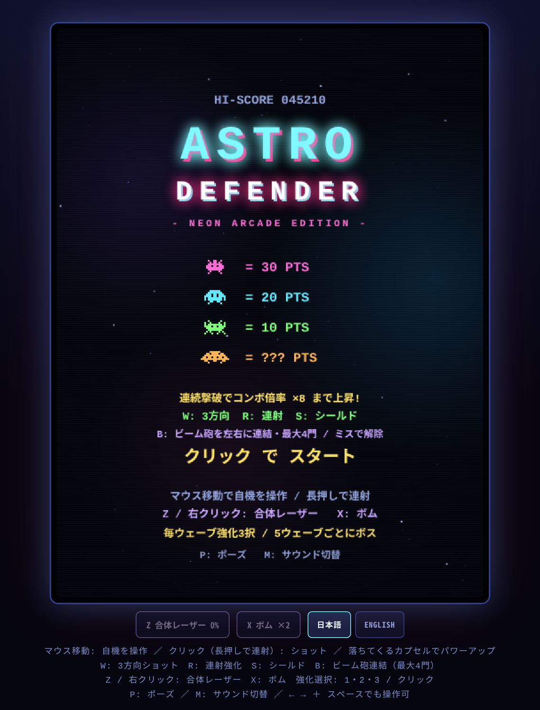
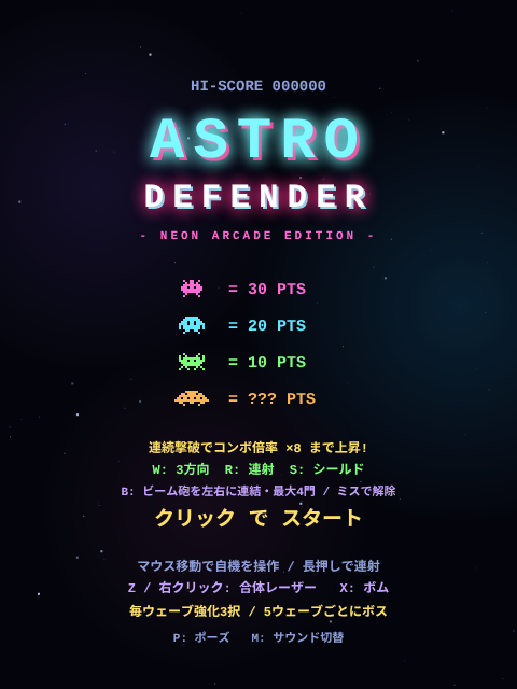
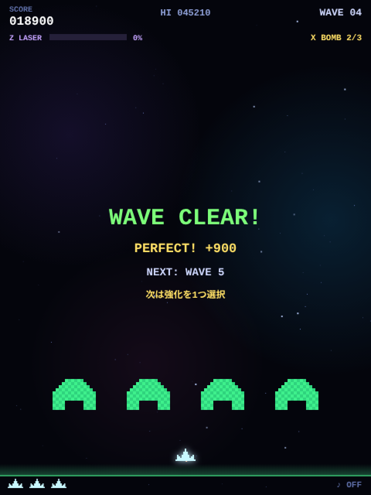
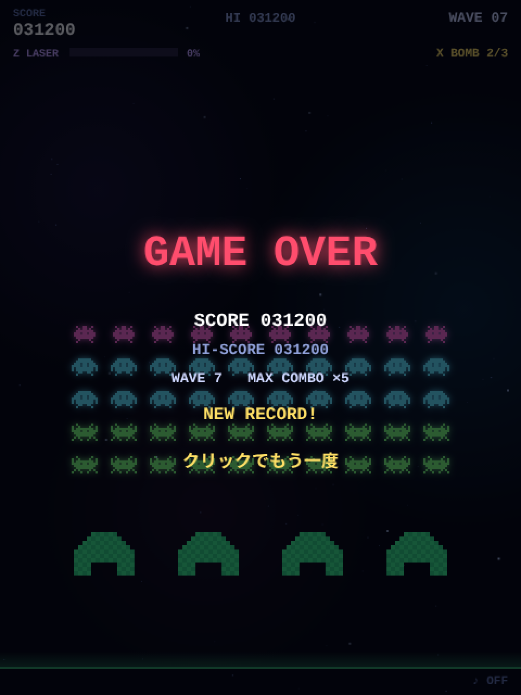
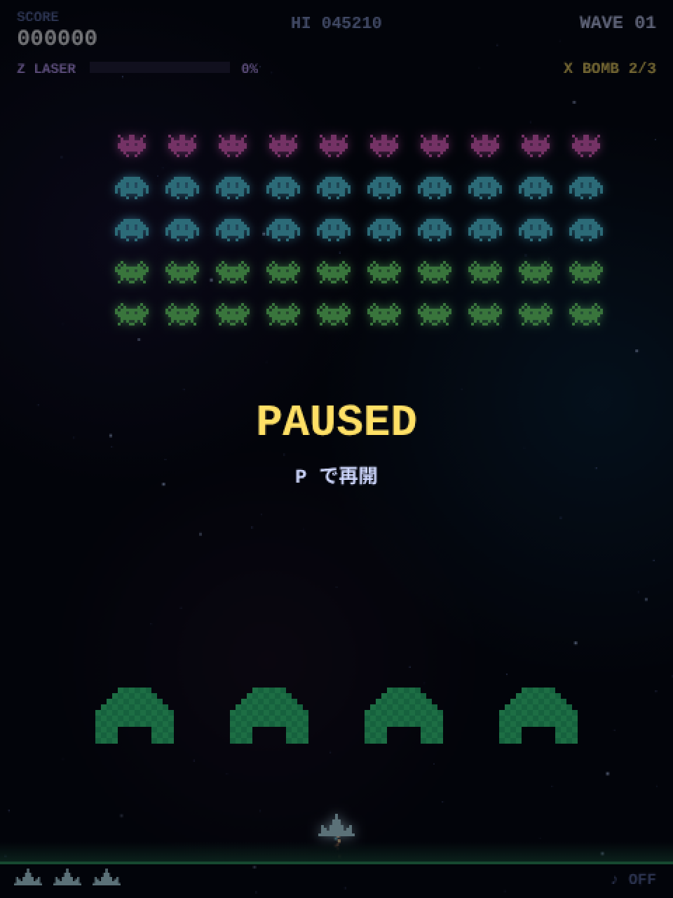
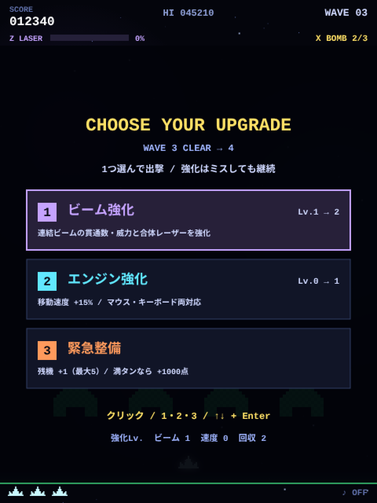
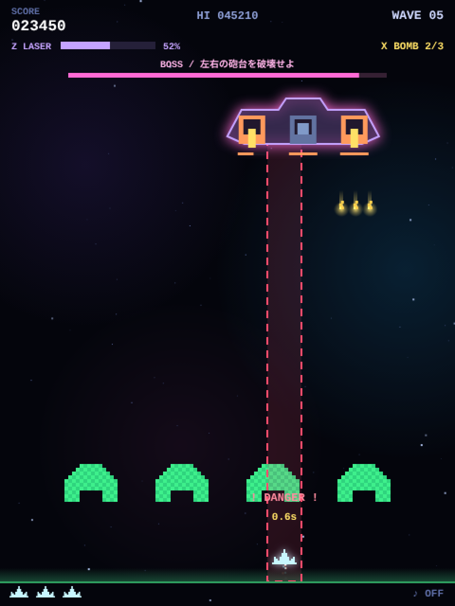
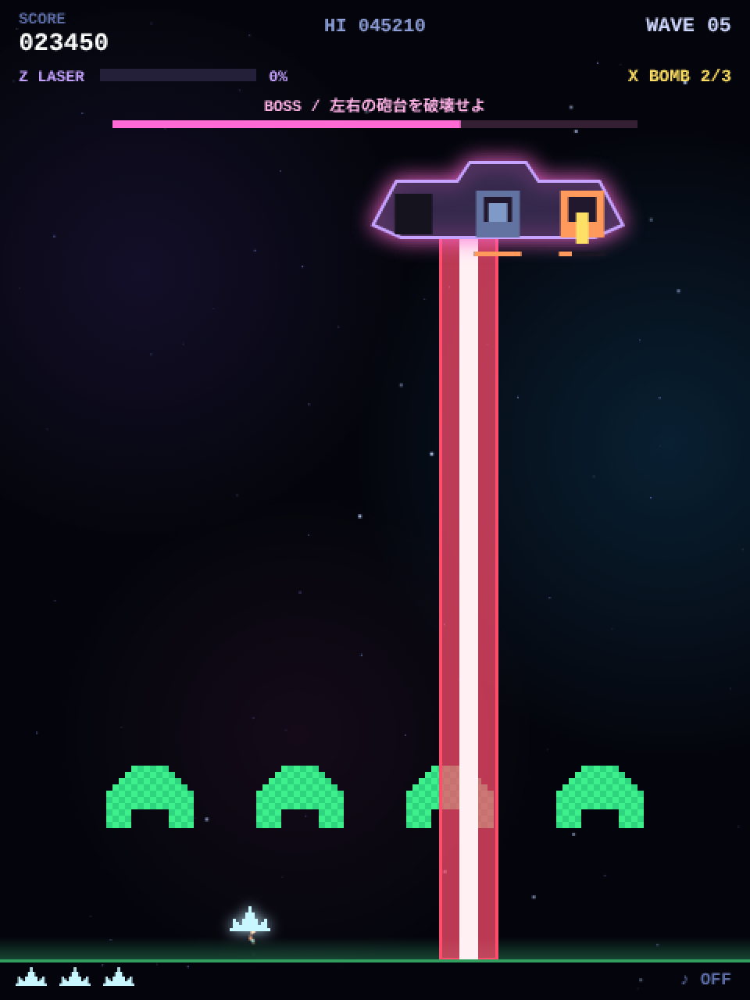

00このページの読み方
ゲームは「遊ぶ」と「作る」で二度おいしい。読み方のコツと準備をまとめました。
誰のためのページ？
変数・関数・配列・オブジェクト・for 文・addEventListener といった JavaScript の基本文法を一通り学んで、
「そろそろ何か動くものを丸ごと読んでみたい」と思っている人に向けて書きました。
Canvas や Web Audio を使ったことがなくても読めるように、はじめて出てくる仕組みはその場で説明します。
3種類のメモ
はじめて見る API や文法を、この場で補足します。知っている人は読み飛ばして OK。
「なぜそう書くのか」という設計の意図。自分でゲームを作るときに使い回せる考え方です。
手を動かして確かめる課題。ページ内の実験コーナー（緑の枠）はそのままブラウザ上で触れます。
コードの見方
コード枠の左上に index.html と L344–354 のように書かれているものは、
実際のソースコードからの抜粋で、番号は本物の行番号です。エディタで index.html を開いて、その行に飛びながら読むと理解が深まります。
左上が 例 になっている枠は、説明のために書き下ろした短いコードです。
準備するもの
- リポジトリを手元に持ってきます。
git clone https://github.com/hnakada123/astro-defender.gitか、GitHub の「Code → Download ZIP」で OK。 index.htmlをブラウザ（Chrome / Firefox / Edge など）で開けばゲームが動きます。サーバーは不要です。- 同じファイルをテキストエディタ（VS Code など）でも開いておきます。
ゲームを開いた状態で F12（Mac は ⌘+⌥+I）を押して「コンソール」タブを開き、
プレイ中に lives = 9 と打って Enter。残機が 9 になります。
このゲームの変数や関数はすべて「グローバル」に置かれているので、コンソールから直接さわれるのです。
この性質は 20 章のテストでも活躍します。
01全体像 — 1ファイルの中身
index.html は「見た目の CSS」「土台の HTML」「ゲーム本体の JavaScript」の3層でできています。

HTML はたった 3 つの部品
画面に必要な HTML は、ゲーム画面になる <canvas>、その下のボタン列、操作説明の段落だけです。
45<div class="frame"><canvas id="game" width="480" height="640"></canvas></div>
46<div class="actions">
47 <button id="laserButton" type="button" disabled>Z 合体レーザー 0%</button>
48 <button id="bombButton" type="button" disabled>X ボム ×2</button>
49 <div class="lang" role="group" aria-label="Language / 言語">
50 <button id="langJa" type="button" aria-pressed="true">日本語</button>
51 <button id="langEn" type="button" aria-pressed="false">ENGLISH</button>
52 </div>
53</div>
54<p class="hint" id="hint"></p><canvas width="480" height="640">— ゲーム画面。480 × 640 ピクセルの絵を描く紙で、後述の JavaScript が毎秒 60 回この上に描き直します。#laserButton/#bombButton— 必殺技のボタン。タッチ操作でも使えるように HTML のボタンとして用意されています。.langの 2 ボタン — 表示言語の切り替え（19 章）。#hint— 操作説明。中身は空で、JavaScript が言語に応じた文を流し込みます。
CSS が作る「筐体」の雰囲気
ゲーム画面は 480 × 640 の固定サイズですが、CSS でウィンドウに合わせて拡大縮小しています。ポイントは image-rendering: pixelated。
拡大したときにドットがぼやけず、カクカクしたレトロな見た目を保てます。
21 canvas {
22 width: min(92vw, max(240px, calc(75dvh - 150px))); aspect-ratio: 3 / 4;
23 image-rendering: pixelated; background: #04050c; border-radius: 6px;
24 touch-action: none; user-select: none;
25 }
26 /* CRT風の走査線とビネット */
27 .frame::after {
28 content: ""; position: absolute; inset: 8px; border-radius: 6px; pointer-events: none;
29 background:
30 repeating-linear-gradient(to bottom, rgba(255,255,255,.03) 0 1px, transparent 1px 3px),
31 radial-gradient(ellipse at center, transparent 55%, rgba(0,0,10,.35));
32 }.frame::after は「枠の上に透明な層をもう1枚重ねる」書き方です。細い横しま（repeating-linear-gradient）と
四隅が暗くなる楕円（radial-gradient）を重ねて、ブラウン管テレビの雰囲気を出しています。pointer-events: none があるので、この層はクリックを邪魔しません。
JavaScript の地図
本体の <script> は約 1,900 行ありますが、/* ===== 見出し ===== */ というコメントで 16 のブロックに区切られています。
上から順に「道具 → 素材 → データ → ルール → 入力 → 更新 → 描画 → ループ」という流れです。
| 行 | ブロック | 何をしているか | 解説章 |
|---|---|---|---|
| L59 | 基本ユーティリティ | 画面サイズ、clamp / rand / hit などの小さな道具 | 04 06 |
| L76 | 表示言語 | 日本語 / 英語の文言表と切り替え | 19 |
| L176 | サウンド | Web Audio で効果音を合成 | 18 |
| L263 | BGM | シンセウェイブ風ループをリアルタイム生成 | 18 |
| L342 | ドット絵スプライト | 文字列からドット絵・光・軌跡の画像を作る | 05 |
| L543 | ゲーム状態 | 定数、全変数、ウェーブ生成、スコア加算、ゲームオーバー | 03 07 11 |
| L720 | コンボ・パワーアップ | 倍率の計算、カプセルのドロップと効果 | 11 12 |
| L757 | 必殺技・ウェーブ強化 | 合体レーザー、ボム、強化3択 | 13 14 |
| L845 | 大型戦艦 | ボスの生成・ダメージ・攻撃パターン | 15 |
| L922 | 編隊からの突入 | 急降下・ジグザグ・側面突入 | 16 |
| L963 | エフェクト | パーティクル、衝撃波、ポップアップ文字 | 17 |
| L983 | 入力 | マウス・タッチ・キーボード・ボタン・言語切替 | 08 |
| L1101 | バリア処理 | 緑の盾が削れる仕組み | 10 |
| L1146 | 更新 | 毎フレームの計算（移動・射撃・衝突・ウェーブ進行） | 07 09 |
| L1480 | 描画 | 背景・敵・自機・HUD・各種画面の描画 | 04 17 |
| L1936 | メインループ | 1秒間に約 60 回、更新と描画を繰り返す | 02 |
データの流れ
ゲームプログラムの骨格はどれも似ています。入力が変数を書き換え、更新がルールに従って変数を進め、描画が変数を絵にする。この 3 つがぐるぐる回っているだけです。
このゲームの関数は、名前の頭を見ればだいたい役割がわかります。
make〜 は「作る」（makeWave, makeBarriers, makeSprite）、
update〜 は「毎フレーム進める」（updatePlay, updateBoss）、
draw〜 は「描く」（drawHud, drawTitle）、
spawn〜 は「エフェクトを発生させる」。迷子になったら名前の頭を見てください。
02ゲームループ — 1秒間に60回まわる心臓
ファイルのいちばん最後にある 10 行が、ゲーム全体を動かしています。
1938let last = performance.now();
1939function frame(now) {
1940 const dt = Math.min((now - last) / 1000, 0.05);
1941 last = now;
1942 if (!paused) update(dt);
1943 draw(now / 1000);
1944 requestAnimationFrame(frame);
1945}
1946requestAnimationFrame(frame);やっていることは 4 つだけです。
- 前回からの経過秒
dtを計算する。nowはミリ秒なので 1000 で割って秒にします。 update(dt)で世界をdt秒ぶん進める。ポーズ中は飛ばします。draw(t)で現在の状態を絵にする。ポーズ中も描くので「PAUSED」の文字が表示できます。requestAnimationFrame(frame)で「次の画面更新のタイミングにまたframeを呼んで」と予約する。これで永久に回り続けます。
なぜ「速度 × dt」で動かすのか
コード全体を見渡すと、動くものはすべて 位置 += 速度 * dt の形で書かれています。たとえば自弾は p.y -= 470 * dt。
これは「1 秒間に 470 ピクセル進む」という意味で、1 フレームが 1/60 秒なら 1 回あたり約 7.8 ピクセル動きます。
// 悪い例: 「1フレームに 5px」だと、120Hz のディスプレイでは 2 倍速くなってしまう
x += 5;
// 良い例: 「1秒に 300px」× 経過秒。60Hz でも 120Hz でも、重くてコマ落ちしても同じ速さ
x += 300 * dt;Math.min((now - last) / 1000, 0.05) は「dt は最大でも 0.05 秒」という意味です。
別のタブを見て 10 秒後に戻ると、素直に計算すれば dt = 10 になり、弾が一瞬で 4,700 ピクセル飛んで壁をすり抜けてしまいます。
上限を設けると、長い空白のあとも「ちょっと進む」だけで済みます。
update の中身は 2 段構え
update は、どの画面でも動くもの（星、パーティクル、スコアの数字アニメ）を updateCommon で進めたあと、
state に応じて updatePlay（プレイ中）や時間経過による画面切り替えを行います。この state が次章のテーマです。
1465function update(dt) {
1466 stateT += dt;
1467 updateCommon(dt);
1468 if (state === "play") {
1469 updatePlay(dt);
1470 } else if (state === "dying") {
1471 if (stateT > 1.15) {
1472 if (lives > 0) { player.alive = true; player.inv = 2; setState("play"); }
1473 else gameOver();
1474 }
1475 } else if (state === "clear") {
1476 if (stateT > 1.6) openUpgrades();
1477 }
1478}03状態遷移 — いま何の画面か
「タイトル」「プレイ中」「やられ中」…画面の種類を 1 つの変数で表し、状態ごとに処理を切り替えます。
572let state = "title"; // title | play | dying | clear | upgrade | gameover
573let stateT = 0;
574let paused = false;| state | どんな画面か | 次に進む条件 |
|---|---|---|
| title | タイトル画面。点数表と操作説明 | クリック / Space / Enter → startGame() → play |
| play | プレイ中。updatePlay が動く唯一の状態 | 被弾 → dying ／ 全滅 → clear ／ 侵入される → gameover |
| dying | 自機が爆発している 1.15 秒間 | 残機あり → play ／ 残機 0 → gameover |
| clear | 「WAVE CLEAR!」表示中の 1.6 秒間 | 時間経過 → upgrade |
| upgrade | 強化 3 択。戦闘は完全停止 | カードを選ぶ → 次ウェーブを生成 → play |
| gameover | 結果表示 | 0.6 秒後にクリック → startGame() → play |
切り替えは setState() 一か所で
606function setState(s) {
607 state = s; stateT = 0;
608 cvs.style.cursor = (s === "play" && !paused) ? "none" : "pointer";
609}状態を変えるときは必ず setState() を通します。ここで stateT（その状態に入ってからの経過秒）を 0 に戻し、
プレイ中だけマウスカーソルを隠しています。stateT は update の中で stateT += dt と増え続けるので、
「dying になって 1.15 秒たったら」「clear になって 1.6 秒たったら」のようなタイミング制御がこの 1 つの変数でできます。
ポーズは state の値ではなく、別の変数 paused で表しています。ポーズは「プレイ中」と「やられ中」のどちらにも重なりうるからです。
もし state = "paused" にしてしまうと、解除するときに「元は play だった？ dying だった？」を覚えておく必要が出てきます。
同時に成り立つものは別の変数にするのがコツです。




04Canvas に描く — 座標系と文字表示
Canvas は「命令すると絵の具を塗ってくれる紙」。塗ったものは動かせないので、毎フレーム全部描き直します。
61const W = 480, H = 640;
62const cvs = document.getElementById("game");
63const ctx = cvs.getContext("2d");ctx（コンテキスト）が Canvas に絵を描くための道具箱です。ctx.fillRect(x, y, w, h) で四角を塗る、
ctx.drawImage(img, x, y) で画像を貼る、ctx.fillText で文字を書く、というように使います。
数学のグラフと違って、Canvas の y 座標は下に行くほど大きくなります。だから自弾は p.y -= 470 * dt（上へ）、敵弾は b.y += b.vy * dt（下へ）です。
「地面に近い = y が大きい」と覚えてください。
文字を描く共通関数 drawText
Canvas で文字を書くには、フォント・色・揃え方を毎回セットしてから fillText を呼ぶ必要があります。面倒なので 1 つの関数にまとめてあります。
168function drawText(s, x, y, o = {}) {
169 ctx.font = `${o.weight || 700} ${o.size || 13}px 'Courier New', ui-monospace, monospace`;
170 ctx.fillStyle = o.color || "#cfd8ff";
171 ctx.textAlign = o.align || "center";
172 ctx.textBaseline = "alphabetic";
173 ctx.fillText(s, x, y);
174}o = {} はオプション引数。drawText("SCORE", 12, 15, { align: "left", size: 10 }) のように、変えたい項目だけを渡せます。
o.size || 13 は「指定がなければ 13」という定番の書き方です。
マウス座標をキャンバス座標に直す
キャンバスは CSS で拡大縮小されているので、画面上のマウス位置（ピクセル）と、キャンバス内部の座標（480 幅）はズレています。 表示サイズに対する割合を使って変換します。
985function canvasX(e) {
986 const r = cvs.getBoundingClientRect();
987 return ((e.clientX - r.left) * W) / r.width;
988}getBoundingClientRect() で「画面のどこに、何ピクセルの大きさで表示されているか」がわかります。
左端からの距離を表示幅で割り、内部幅 W を掛ければ完成です。表示が 2 倍に拡大されていれば、マウスが 200px 動いても内部では 100 動いたことになります。
描く順番 = 重なり順
後から描いたものが上に重なります。draw() は背景 → ゲーム内容 → HUD → オーバーレイ（ポーズやゲームオーバー）の順に呼び出しています。
1916function draw(t) {
1917 refreshActionButtons();
1918 ctx.fillStyle = "#04050c";
1919 ctx.fillRect(0, 0, W, H);
1920
1921 ctx.save();
1922 if (shake > 0) ctx.translate(rand(-1, 1) * shake * 10, rand(-1, 1) * shake * 10);
1923
1924 drawBackground(t);
1925
1926 if (state === "title") {
1927 drawTitle(t);
1928 } else {
1929 drawGame(t);
1930 drawHud();
1931 drawOverlay(t);
1932 }
1933 ctx.restore();
1934}ctx.save() は「今の設定（座標の原点、色、透明度など）を控えておく」、ctx.restore() は「控えた設定に戻す」です。
その間で ctx.translate(dx, dy) すると、以降の描画すべてが (dx, dy) だけずれます。
shake（画面の揺れ）が残っている間だけランダムにずらし、描き終わったら restore で元に戻す。これが「画面シェイク」の全実装です。
05ドット絵を文字列で描く — スプライト生成
画像ファイルは 1 枚もありません。エイリアンも自機も、X と . を並べた文字列から起動時に作られます。
makeSprite — X のところだけ塗る
344function makeSprite(rows, color, scale = 2) {
345 const c = document.createElement("canvas");
346 c.width = rows[0].length * scale;
347 c.height = rows.length * scale;
348 const g = c.getContext("2d");
349 g.fillStyle = color;
350 rows.forEach((row, y) => {
351 for (let x = 0; x < row.length; x++) if (row[x] === "X") g.fillRect(x * scale, y * scale, scale, scale);
352 });
353 return c;
354}やっていることは単純です。文字列の配列を 1 行ずつ、1 文字ずつ見て、"X" なら小さな四角を塗る。
scale = 2 なら 1 文字が 2×2 ピクセルになります。塗る先は document.createElement("canvas") で作った、画面には表示されないキャンバスです。
document.createElement("canvas") で作ったキャンバスは、HTML に追加しない限り画面には出ません。
けれど普通に絵を描けて、しかも ctx.drawImage(そのキャンバス, x, y) で画像として別のキャンバスに貼り付けられます。
「画像を作る工場」として使うのが定番テクニックです。
エイリアンのデザインは 2 コマのアニメ
418 a: { // トゲ型エイリアン
419 pts: 30, color: "#ff6ad5",
420 frames: [[
421 ".X..XX..X.",
422 "..X.XX.X..",
423 ".XXXXXXXX.",
424 "XXX.XX.XXX",
425 "XXXXXXXXXX",
426 ".XXXXXXXX.",
427 "..X....X..",
428 ".X......X.",
429 ], [
430 "X...XX...X",
431 ".X..XX..X.",
432 ".XXXXXXXX.",
433 "XXX.XX.XXX",
434 "XXXXXXXXXX",
435 ".XXXXXXXX.",
436 "..X....X..",
437 "...X..X...",
438 ]],frames に 2 枚の絵が入っていて、足の形が少し違います。編隊が一歩動くたびに form.anim が 0 と 1 を行き来し、
ty.img[form.anim] で描く絵を切り替える。これだけで「うごめいている」ように見えます。
定義の直後にある小さなループが、3 種類すべてのエイリアンについて画像と光を事前に作っておきます。
485for (const k in TYPES) {
486 const t = TYPES[k];
487 t.img = t.frames.map(f => makeSprite(f, t.color));
488 t.glow = t.img.map(im => withGlow(im, 3, 0.8));
489 t.w = t.img[0].width;
490 t.h = t.img[0].height;
491}左の文字列を書き換えると、右に makeSprite と withGlow（ゲームと同じ関数）で描いた結果が出ます。X が塗り、. が透明です。
ネオンの光は「ぼかしたコピー」
光っているように見せるには、同じ絵をぼかして下に敷き、その上に本体を重ねます。withGlow はぼかした版の画像を作る関数です。
361function withGlow(img, blur = 3, alpha = 0.85) {
362 const pad = blur * 3;
363 const c = document.createElement("canvas");
364 c.width = img.width + pad * 2;
365 c.height = img.height + pad * 2;
366 const g = c.getContext("2d");
367 if (CAN_FILTER) {
368 g.filter = `blur(${blur}px)`;
369 g.globalAlpha = alpha;
370 g.drawImage(img, pad, pad);
371 g.filter = "none";
372 } else {
373 g.globalAlpha = alpha / 6;
374 for (let dx = -blur; dx <= blur; dx += blur)
375 for (let dy = -blur; dy <= blur; dy += blur) g.drawImage(img, pad + dx, pad + dy);
376 }
377 return { img: c, pad };
378}g.filter = "blur(3px)"— Canvas の CSS フィルタ機能。これで描く画像がぼやけます。pad— ぼかしは元の絵より外側にはみ出すので、キャンバスを大きめに作って余白をとっています。描くときはr.x - gl.padのように余白ぶん戻して位置を合わせます。CAN_FILTERが偽（古いブラウザ）のときは、少しずつずらして半透明に 9 回描いて「なんちゃってぼかし」にしています。
弾の光やカプセルの光は、円形グラデーションの画像 glowDot で作ります。中心が濃く、外側に向かって透明になる 1 枚の画像です。
380function glowDot(hex, r) {
381 const c = document.createElement("canvas");
382 c.width = c.height = r * 2;
383 const g = c.getContext("2d");
384 const gr = g.createRadialGradient(r, r, 0, r, r, r);
385 gr.addColorStop(0, hex + "dd");
386 gr.addColorStop(0.5, hex + "55");
387 gr.addColorStop(1, hex + "00");
388 g.fillStyle = gr;
389 g.fillRect(0, 0, r * 2, r * 2);
390 return c;
391}ぼかしやグラデーションは、毎フレーム計算するには重い処理です。だからゲーム開始前に画像として作っておき（プリレンダリング）、
ゲーム中は drawImage で貼るだけにしています。SHIP_GLOW、P_GLOW、NEBULAE などの大文字の定数はすべてこの「作り置き」です。
493const SHIP_IMG = makeSprite([
494 "......X......",
495 "......X......",
496 ".....XXX.....",
497 ".....XXX.....",
498 ".X..XXXXX..X.",
499 ".XX.XXXXX.XX.",
500 ".XXXXXXXXXXX.",
501 "XXXXXXXXXXXXX",
502], "#c8f7ff");
503const SHIP_GLOW = withGlow(SHIP_IMG, 4, 0.9);06当たり判定 — 四角形の重なり
弾が敵に当たった、カプセルを拾った、敵が自機に触れた。すべてこの 1 行で判定しています。
69const hit = (a, b) => a.x < b.x + b.w && a.x + a.w > b.x && a.y < b.y + b.h && a.y + a.h > b.y;a と b は { x, y, w, h }（左上の座標と幅・高さ）を持つオブジェクトです。
4 つの条件がすべて成り立つときだけ「重なっている」と判定します。逆に言えば、どれか 1 つでも崩れたら離れているということです。
マウス（またはタッチ）で赤い四角を動かして、4 つの条件がどう変わるか見てください。
- a.x < b.x + b.w
- a.x + a.w > b.x
- a.y < b.y + b.h
- a.y + a.h > b.y
「当たり判定用の四角」はその場で計算する
自機の位置は player.x（中心の x 座標）しか保存していません。判定に使う四角は、必要になるたびに関数で作ります。
622function playerRect() { return { x: player.x - 13, y: PLAYER_Y, w: 26, h: 16 }; }630function alienRect(a) {
631 const t = TYPES[a.type];
632 if (a.flight) return { x: a.flight.x, y: a.flight.y, w: t.w, h: t.h };
633 return {
634 x: form.ox + a.c * CELL_W + (CELL_W - t.w) / 2,
635 y: form.oy + a.r * CELL_H,
636 w: t.w, h: t.h,
637 };
638}alienRect は次章で説明する「編隊の中の行・列」から座標を計算します。突入中（a.flight がある）の敵は、編隊とは無関係に自由な位置を持つので、そちらを優先します。
「中心 x」と「四角の左上 x」を両方保存すると、片方を更新し忘れてズレるバグの元になります。元になる値だけ持ち、派生する値は計算で出す。 ゲームに限らず使える原則です。
円で判定したいとき
ボムの効果範囲は「自機から 240 ピクセル以内」という円です。こういうときは 2 点間の距離を Math.hypot(dx, dy) で出して半径と比べます。
792 if (Math.hypot(r.x + r.w / 2 - player.x, r.y + r.h / 2 - PLAYER_Y) <= BOMB_RADIUS) killAlien(a, r);07敵の編隊 — 50体をひとかたまりで動かす
50 体それぞれの座標は持たず、「編隊の左上」と「何行何列目か」だけで位置を決めています。
545const ROWS = 5, COLS = 10, CELL_W = 36, CELL_H = 30, DROP = 14;
546const ROW_TYPE = ["a", "b", "b", "c", "c"];
547const TOTAL = ROWS * COLS;585let aliens = [], aliveN = 0;
586const form = { ox: 60, oy: 96, dir: 1, anim: 0, animT: 0 };1 体の敵は { r: 行, c: 列, type: 種類, alive: 生きているか } だけ。座標は持ちません。
編隊全体の左上 form.ox, form.oy に、列 × 36 ピクセル・行 × 30 ピクセルを足したものが、その敵の位置です（前章の alienRect）。
ウェーブの生成 — makeWave
ウェーブ開始時にすべてをリセットする関数です。二重ループで 50 体を並べ、行番号によって種類を変えます（ROW_TYPE）。
661function makeWave() {
662 aliens = [];
663 boss = null;
664 if (wave % 5 === 0) makeBoss();
665 else {
666 for (let r = 0; r < ROWS; r++)
667 for (let c = 0; c < COLS; c++)
668 aliens.push({ r, c, type: ROW_TYPE[r], alive: true });
669 }
670 aliveN = aliens.length;
671 form.ox = 60;
672 form.oy = 96 + Math.min(wave - 1, 5) * 10;
673 form.dir = 1; form.anim = 0; form.animT = 0;
674 pBullets = []; eBullets = []; particles = []; popups = []; rings = []; powerups = [];
675 saucer = null; saucerSoundStop(); saucerT = rand(10, 20);
676 fireT = 1.5; bannerT = 1.3; freezeT = 0;
677 waveNoDamage = true; perfectBonus = 0;
678 player.alive = true; player.inv = 1.5; player.cool = 0;
679 special.laserT = 0; special.bombT = 0;
680 flightT = 6; flightCount = 0; upgradeChoices = [];
681 makeBarriers();
682}
弾・パーティクル・タイマー・自機の状態など、ウェーブをまたいで残ってはいけないものがここで一気に空になります。 新しい要素（たとえば新しい種類の弾）を追加したら、ここにも初期化を足すのを忘れないでください。
編隊の移動 — 端で折り返して一段下がる
1304 // --- 編隊移動 ---
1305 if (aliens.some(a => a.alive && !a.flight)) {
1306 form.ox += form.dir * formSpeed() * dt;
1307 const b = formBounds();
1308 if (form.dir > 0 && b.max > W - 8) { form.ox -= b.max - (W - 8); form.dir = -1; form.oy += DROP; }
1309 else if (form.dir < 0 && b.min < 8) { form.ox += 8 - b.min; form.dir = 1; form.oy += DROP; }
1310
1311 const period = clamp(0.65 * (aliveN / TOTAL) + 0.08, 0.1, 0.73);
1312 form.animT += dt;
1313 if (form.animT >= period) {
1314 form.animT = 0; form.anim ^= 1;
1315 sfx.step(form.anim === 1);
1316 }
1317
1318 erodeBarriers();form.oxに「向き × 速さ × dt」を足して横に動かす。formBounds()で、生きている敵の左端と右端を調べる（死んだ敵は無視するので、端が空くと折り返し位置も変わる）。- 右端が画面右（
W - 8）を超えたら、はみ出したぶん戻して、向きを反転し、DROP（14 ピクセル）下げる。左も同様。 - 一定周期で
form.animを 0 ↔ 1 と反転させ（^= 1）、足踏み音を鳴らす。
残りが少ないほど速くなる
1148function formSpeed() {
1149 const r = aliveN / TOTAL;
1150 let s = 16 + (wave - 1) * 7 + 130 * Math.pow(1 - r, 1.7);
1151 if (aliveN <= 3) s += 55;
1152 if (aliveN === 1) s += 75;
1153 return Math.min(s, 240);
1154}残っている割合 r が小さいほど速くなり、ラスト 3 体と 1 体でさらに加速します。オリジナルのインベーダーゲームは「敵が減ると処理が軽くなって速くなる」という
偶然の産物が名物になりましたが、このゲームはそれを式でわざと再現しています。
| 残り | 50 | 40 | 30 | 20 | 10 | 5 | 3 | 1 |
|---|---|---|---|---|---|---|---|---|
| ウェーブ 1 の速さ (px/秒) | 16 | 24 | 43 | 71 | 105 | 125 | 188 | 240 |
| ウェーブ 5 の速さ (px/秒) | 44 | 52 | 71 | 99 | 133 | 153 | 216 | 240 |
実物と同じ formSpeed() と折り返しロジックで動いています。残りの数を減らすと、速さと足踏みのテンポがどう変わるか見てみましょう。
撃つのは各列の「いちばん下」だけ
本物の編隊らしく、上の敵は前の敵に隠れて撃てません。列ごとに最も下（r が最大）の生きている敵を探し、その中から 1 体をランダムに選んで撃たせます。
1334 // --- 敵の射撃 ---
1335 fireT -= dt;
1336 const maxEB = Math.min(7, 2 + wave);
1337 if (fireT <= 0 && bannerT <= 0 && aliveN > 0) {
1338 const base = Math.max(0.3, 1.15 - (wave - 1) * 0.07);
1339 fireT = base * rand(0.5, 1.5) * (0.55 + 0.45 * (aliveN / TOTAL));
1340 if (eBullets.length < maxEB) {
1341 const bottoms = [];
1342 for (let c = 0; c < COLS; c++) {
1343 let low = null;
1344 for (const a of aliens) if (a.alive && !a.flight && a.c === c && (!low || a.r > low.r)) low = a;
1345 if (low) bottoms.push(low);
1346 }
1347 if (bottoms.length) {
1348 const shooter = bottoms[(Math.random() * bottoms.length) | 0];
1349 const r = alienRect(shooter);
1350 eBullets.push({
1351 x: r.x + r.w / 2 - 1.5, y: r.y + r.h, w: 3, h: 9,
1352 vy: Math.min(330, 150 + wave * 14) * rand(0.9, 1.1),
1353 });
1354 }
1355 }
1356 }撃つ間隔 fireT はウェーブが進むほど短く、敵が減るほど短くなります。画面上の敵弾の数にも上限 maxEB があるので、理不尽な弾幕にはなりません。
侵入されたらゲームオーバー
1320 // 侵入チェック
1321 const prect = playerRect();
1322 for (const a of aliens) {
1323 if (!a.alive || a.flight) continue;
1324 const r = alienRect(a);
1325 if (r.y + r.h >= PLAYER_Y + 8 || hit(r, prect)) {
1326 spawnBurst(prect.x + 13, prect.y + 8, "#c8f7ff", 26, 160);
1327 boom(0.6, 0.3, 500);
1328 gameOver();
1329 return;
1330 }
1331 }08自機と入力 — マウスもキーボードも
入力イベントは変数を書き換えるだけ。実際に自機を動かすのは updatePlay の仕事です。
ポインタイベントで「目標の x」を覚える
1006window.addEventListener("pointermove", e => {
1007 if (e.target !== cvs) return;
1008 if (state === "upgrade") { const i = upgradeAtPointer(e); if (i >= 0) upgradeIndex = i; return; }
1009 mouseX = clamp(canvasX(e), 0, W);
1010 inputMode = "mouse";
1011});
1012cvs.addEventListener("pointerdown", e => {
1013 e.preventDefault();
1014 ac(); if (!paused) musicStart();
1015 if (state === "upgrade") { if (e.button === 0) chooseUpgrade(upgradeAtPointer(e)); return; }
1016 if (e.button === 2) { activateLaser(); return; }
1017 if (e.button !== 0) return;
1018 mouseX = clamp(canvasX(e), 0, W);
1019 inputMode = "mouse";
1020 handlePress();
1021 if (state === "play" && !paused) shooting = true;
1022});
1023window.addEventListener("pointerup", () => { shooting = false; });pointermove ではマウス位置を mouseX に保存するだけで、自機を直接動かしません。
pointerdown では音の準備（ac()）、右クリックならレーザー、左クリックなら「押している」フラグ shooting を立てます。
イベントは「いつ・何回起きるか」がバラバラです。マウスを速く動かすと 1 フレームに何度も pointermove が来るし、止めていれば 1 回も来ません。
そこでイベントは「望み」を変数に記録するだけにして、実際の移動は毎フレーム一定のリズムで動く updatePlay に任せます。
こうすると「1 秒に最大 340 ピクセル」といった速度制限もきれいにかけられます。
updatePlay の自機パート
1260 // --- 自機 ---
1261 const speed = 340 * (1 + upgrades.speed * 0.15);
1262 if (inputMode === "mouse") {
1263 const target = clampPlayerX(mouseX);
1264 player.x = clampPlayerX(player.x + clamp(target - player.x, -speed * dt * 2, speed * dt * 2));
1265 } else player.x = clampPlayerX(player.x + speed * dt * ((keys.right ? 1 : 0) - (keys.left ? 1 : 0)));
1266 player.cool -= dt;
1267 player.inv = Math.max(0, player.inv - dt);
1268 active.wide = Math.max(0, active.wide - dt);
1269 active.rapid = Math.max(0, active.rapid - dt);
1270 special.bombT = Math.max(0, special.bombT - dt);- マウスモードでは、目標
targetとの差をclampで「1 フレームに動ける最大量」に制限してから足します。だから瞬間移動はせず、最高速度で追いかけます。 - キーボードモードでは
(右 ? 1 : 0) - (左 ? 1 : 0)で -1 / 0 / +1 を作り、速度を掛けます。両方押すと 0 で止まる、という挙動もこの式から自然に出ます。 player.cool（連射の待ち時間）、player.inv（無敵時間）、パワーアップの残り時間は、すべて毎フレームdtずつ減らします。Math.max(0, ...)で負の数にならないようにしています。
624function clampPlayerX(x) {
625 // 連結砲も画面内に収める。当たり判定は自機本体のみ。
626 const margin = active.beam > 0 ? Math.abs(BEAM_OFFSETS[active.beam - 1]) + 8 : 20;
627 return clamp(x, margin, W - margin);
628}画面端の処理も自機本体だけでなく、左右に連結したビーム砲がはみ出さないように余白 margin を広げています。
ショット — クールダウンと弾数制限
1272 const cd = active.rapid > 0 ? 0.12 : 0.27;
1273 const maxB = (active.rapid > 0 || active.wide > 0) ? 12 : 3;
1274 // ビームは通常弾の上限に数えず、共通のクールダウンで同時発射する。
1275 const normalBulletCount = pBullets.reduce((n, p) => n + (p.beam ? 0 : 1), 0);
1276 if ((shooting || keys.fire) && player.cool <= 0 && normalBulletCount < maxB) {
1277 const mk = vx => pBullets.push({ x: player.x - 1, y: PLAYER_Y - 10, w: 2, h: 10, vx });
1278 mk(0);
1279 if (active.wide > 0) { mk(-70); mk(70); }
1280 for (let i = 0; i < active.beam; i++) {
1281 const x = player.x + BEAM_OFFSETS[i];
1282 pBullets.push({ x: x - 2, y: PLAYER_Y - 32, w: 4, h: 28, vx: 0, beam: true, pierce: 1 + upgrades.beam, damage: 1 + upgrades.beam * 0.5 });
1283 spawnBurst(x, PLAYER_Y - 4, BEAM_COLOR, 3, 55);
1284 }
1285 player.cool = cd;
1286 for (let i = 0; i < 3; i++) particles.push({
1287 x: player.x + rand(-3, 3), y: PLAYER_Y - 8, vx: rand(-20, 20), vy: rand(-90, -40),
1288 life: 0.1, max: 0.1, color: "#7df9ff", size: 2,
1289 });
1290 sfx.shoot();
1291 if (active.beam > 0) sfx.beam();
1292 }撃てる条件は 3 つ。「ボタンが押されている」「クールダウンが終わっている」「画面上の自弾が上限未満」。
mk は弾を 1 発追加するだけの小さな関数で、3 方向ショット中は左右に vx（横速度）付きの弾を追加しています。
キーボード
1056window.addEventListener("keydown", e => {
1057 const k = e.key.toLowerCase();
1058 if ([" ", "enter", "arrowleft", "arrowright", "arrowup", "arrowdown"].includes(k)) e.preventDefault();
1059 if (e.repeat) return;
1060 if (state === "upgrade") {
1061 if (["1", "2", "3"].includes(k)) chooseUpgrade(Number(k) - 1);
1062 else if (k === "arrowup") upgradeIndex = (upgradeIndex + 2) % 3;
1063 else if (k === "arrowdown") upgradeIndex = (upgradeIndex + 1) % 3;
1064 else if (k === "enter" || k === " ") chooseUpgrade(upgradeIndex);
1065 else if (k === "m") toggleMute();
1066 return;
1067 }
1068 if (k === "p" || k === "escape") {
1069 if (state === "play" || state === "dying") setPaused(!paused);
1070 } else if (k === "m") {
1071 toggleMute();
1072 } else if (k === "z") {
1073 activateLaser();
1074 } else if (k === "x") {
1075 activateBomb();
1076 } else if (k === " " || k === "enter") {
1077 ac(); musicStart(); handlePress(); keys.fire = true;
1078 } else if (k === "arrowleft" || k === "a") {
1079 keys.left = true; inputMode = "keys";
1080 } else if (k === "arrowright" || k === "d") {
1081 keys.right = true; inputMode = "keys";
1082 }
1083});e.key.toLowerCase()で大文字小文字の違いを吸収しています（Shift や CapsLock の状態に左右されない）。e.preventDefault()はブラウザ標準の動作（スペースでページがスクロールする等）を止めます。e.repeatはキーを押しっぱなしにしたときの連続イベント。無視しないと 1 回の押下でポーズが ON/OFF を繰り返してしまいます。
タブを離れたら自動ポーズ
1091window.addEventListener("blur", () => { if (state === "play") setPaused(true); });
1092document.addEventListener("visibilitychange", () => {
1093 if (document.hidden) {
1094 if (state === "play") setPaused(true);
1095 else musicStop();
1096 } else if (!paused && actx) {
1097 musicStart();
1098 }
1099});ウィンドウからフォーカスが外れたり、タブが隠れたりしたらポーズします。見ていない間にやられるのを防ぐ、地味に大切な配慮です。
09弾と衝突処理 — 配列を後ろから回す理由
弾は配列に入れて管理し、毎フレーム「動かす → 当たったか調べる → 消す」を繰り返します。

1396 // --- 自弾 ---
1397 for (let i = pBullets.length - 1; i >= 0; i--) {
1398 const p = pBullets[i];
1399 p.y -= 470 * dt;
1400 p.x += (p.vx || 0) * dt;
1401 let dead = p.y + p.h < 0 || p.x < -20 || p.x > W + 20;
1402 if (!dead && barrierHit(p, 1)) dead = true;
1403 if (!dead) {
1404 for (let j = eBullets.length - 1; j >= 0; j--) {
1405 if (hit(p, eBullets[j])) {
1406 spawnBurst(p.x, p.y, "#ffffff", 6, 90);
1407 sfx.spark();
1408 eBullets.splice(j, 1);
1409 dead = true;
1410 break;
1411 }
1412 }
1413 }
1414 if (!dead && saucer && hit(p, saucer)) {
1415 killSaucer();
1416 dead = true;
1417 }
1418 if (!dead && hitBoss(p, p.damage || 1)) dead = true;
1419 if (!dead) {
1420 for (const a of aliens) {
1421 if (!a.alive) continue;
1422 const r = alienRect(a);
1423 if (hit(p, r)) {
1424 killAlien(a, r);
1425 p.pierce = (p.pierce || 1) - 1;
1426 if (p.pierce <= 0) { dead = true; break; }
1427 }
1428 }
1429 }
1430 if (dead) pBullets.splice(i, 1);
1431 }1 発の弾について、上から順に「画面外に出た？」「バリアに当たった？」「敵弾と相殺？」「円盤に命中？」「ボスに命中？」「エイリアンに命中？」と調べ、
どれかに該当したら dead = true にして最後に配列から取り除きます。ビーム弾（p.beam）は pierce（貫通回数）が残っている限り消えません。
なぜ i-- で後ろから回すのか
// 前から回すと、削除した瞬間に後ろの要素が 1 つ前へ詰まり、次の要素を見逃してしまう
for (let i = 0; i < arr.length; i++) { if (cond(arr[i])) arr.splice(i, 1); } // ← 危険
// 後ろから回せば、削除しても「まだ見ていない前側」の番号はずれない
for (let i = arr.length - 1; i >= 0; i--) { if (cond(arr[i])) arr.splice(i, 1); } // ← 安全このゲームでは自弾・敵弾・パーティクル・カプセル、途中で消える可能性がある配列はすべて後ろから回しています。定番のイディオムなので、形で覚えてしまいましょう。
敵弾と被弾
1433 // --- 敵弾 ---
1434 const prect = playerRect();
1435 for (let i = eBullets.length - 1; i >= 0; i--) {
1436 const b = eBullets[i];
1437 b.y += b.vy * dt;
1438 b.x += (b.vx || 0) * dt;
1439 let dead = false;
1440 if (b.x < -20 || b.x > W + 20) dead = true;
1441 if (b.y + b.h > GROUND_Y) { spawnBurst(b.x + 1, GROUND_Y, "#ffd24d", 5, 60); dead = true; }
1442 if (!dead && barrierHit(b, 1)) dead = true;
1443 if (!dead && player.alive && player.inv <= 0 && hit(b, prect)) { dead = true; damagePlayer(); }
1444 if (dead) eBullets.splice(i, 1);
1445 if (state !== "play") return;
1446 }被弾の判定には player.inv <= 0（無敵時間が切れている）という条件が入っています。復活直後やボム使用後はしばらく当たりません。
1210function damagePlayer() {
1211 waveNoDamage = false;
1212 resetCombo();
1213 if (active.shield > 0) {
1214 active.shield = 0;
1215 player.inv = 1.2;
1216 spawnRing(player.x, PLAYER_Y + 8, "#7dff7a", 240, 0.4);
1217 popup(player.x, PLAYER_Y - 24, "SHIELD BREAK", "#7dff7a", 12);
1218 sfx.shieldBreak();
1219 return;
1220 }
1221 hitPlayer();
1222}1194function hitPlayer() {
1195 lives--;
1196 const pr = playerRect();
1197 spawnBurst(pr.x + 13, pr.y + 8, "#c8f7ff", 30, 170);
1198 spawnBurst(pr.x + 13, pr.y + 8, "#ff9a5c", 18, 110);
1199 spawnRing(pr.x + 13, pr.y + 8, "#ff4d6d", 260, 0.5);
1200 sfx.player();
1201 shake = 0.5;
1202 player.alive = false;
1203 active.beam = 0;
1204 special.laserT = 0;
1205 eBullets = [];
1206 shooting = false;
1207 setState("dying");
1208}damagePlayer はまずシールドを確認し、あればシールドだけ失って終わり。なければ hitPlayer で残機を減らし、爆発を出し、state を dying にします。
ミスするとビーム砲の連結（active.beam）が解除されるのもここです。
復活直後の自機がチカチカするのは、描画側のこの 1 行です。Math.floor(t * 12) % 2 は 1 秒に 12 回 0 と 1 を行き来するので、偶数のときだけ描かないことで点滅になります。
1795 if (player.alive && !(player.inv > 0 && Math.floor(t * 12) % 2 === 0)) {10バリア — 崩れていく緑の盾
バリアは 14 × 10 マスの小さなグリッド。弾が当たったマスの周りをランダムに削っていきます。

形を作る
640function makeBarriers() {
641 barriers = [];
642 const cols = 14, rows = 10, cell = 4, bw = cols * cell;
643 for (let i = 0; i < 4; i++) {
644 const x = (W * (i + 1)) / 5 - bw / 2, y = H - 150;
645 const g = [];
646 for (let r = 0; r < rows; r++) {
647 const line = [];
648 for (let c = 0; c < cols; c++) {
649 let solid = 1;
650 const cut = 4 - r; // 上部の角を斜めに落としたアーチ形
651 if (cut > 0 && (c < cut || c >= cols - cut)) solid = 0;
652 if (r >= rows - 3 && c >= 4 && c < cols - 4) solid = 0; // 下の切り欠き
653 line.push(solid);
654 }
655 g.push(line);
656 }
657 barriers.push({ x, y, cell, cols, rows, g });
658 }
659}g は 1 と 0 の二次元配列で、1 が「まだある」マスです。上の角を斜めに落とし（cut）、下の中央をくり抜いて（rows - 3 以降）、おなじみのアーチ形にしています。
実物と同じ makeBarriers と barrierHit のロジックです。ボタンを押すたびにランダムな位置に弾が当たります。
弾が当たったマスを探す
1103function barrierHit(rect, blast) {
1104 for (const b of barriers) {
1105 const bb = { x: b.x, y: b.y, w: b.cols * b.cell, h: b.rows * b.cell };
1106 if (!hit(rect, bb)) continue;
1107 const c0 = Math.max(0, Math.floor((rect.x - b.x) / b.cell));
1108 const c1 = Math.min(b.cols - 1, Math.floor((rect.x + rect.w - 0.01 - b.x) / b.cell));
1109 const r0 = Math.max(0, Math.floor((rect.y - b.y) / b.cell));
1110 const r1 = Math.min(b.rows - 1, Math.floor((rect.y + rect.h - 0.01 - b.y) / b.cell));
1111 for (let r = r0; r <= r1; r++) {
1112 for (let c = c0; c <= c1; c++) {
1113 if (!b.g[r][c]) continue;
1114 for (let dr = -blast; dr <= blast; dr++) {
1115 for (let dc = -blast; dc <= blast; dc++) {
1116 const rr = r + dr, cc = c + dc;
1117 if (rr < 0 || cc < 0 || rr >= b.rows || cc >= b.cols) continue;
1118 if (Math.abs(dr) + Math.abs(dc) <= 1 || Math.random() < 0.55) b.g[rr][cc] = 0;
1119 }
1120 }
1121 spawnBurst(b.x + c * b.cell + 2, b.y + r * b.cell + 2, "#3ef08c", 6, 70);
1122 return true;
1123 }
1124 }
1125 }
1126 return false;
1127}- まずバリア全体の四角と弾で大まかに
hit。外れていれば次のバリアへ。 - 弾の四角が「何列目から何列目、何行目から何行目」にかかっているかを、
(rect.x - b.x) / b.cellで割り算して求めます。 - その範囲を走査し、最初に見つかった「まだあるマス」を中心に、周囲
blastマスを削ります。上下左右の隣は必ず、斜めは 55% の確率で消えるので、自然なギザギザになります。 - 削ったら緑のパーティクルを出して
trueを返す。呼び出し側はそれを見て弾を消します。
敵の編隊がバリアの高さまで下りてくると、erodeBarriers() が敵と重なったマスを容赦なく消します。合体レーザーとボムはバリアを傷つけないよう、意図的にこの関数を通していません。
11スコア・コンボ・残機
「敵を倒すと何が起きるか」を追うと、ゲームの気持ちよさを作っている仕掛けが全部見えてきます。

killAlien — 撃破したときに起きる 9 つのこと
1167function killAlien(a, r) {
1168 if (!a.alive) return;
1169 a.alive = false; aliveN--;
1170 gainCharge(6);
1171 bumpCombo();
1172 const gain = TYPES[a.type].pts * combo.mult;
1173 addScore(gain);
1174 if (combo.mult > 1) popup(r.x + r.w / 2, r.y, `${gain}`, MULT_COLORS[combo.mult - 1], 10);
1175 spawnBurst(r.x + r.w / 2, r.y + r.h / 2, TYPES[a.type].color, 16, 130);
1176 spawnRing(r.x + r.w / 2, r.y + r.h / 2, TYPES[a.type].color, 160, 0.3);
1177 maybeDrop(r.x + r.w / 2, r.y + r.h / 2);
1178 freezeT = 0.025;
1179 sfx.alien();
1180}- 生存フラグを下ろし、生存数を減らす
- レーザーゲージを 6 充電（13 章）
- コンボを進める
- 基本点 × コンボ倍率を加算
- 倍率が 2 以上なら得点をその場にポップアップ
- 敵の色のパーティクルと衝撃波リングを出す（17 章）
- まれにカプセルを落とす（12 章）
freezeT = 0.025— 25 ミリ秒だけ時間を止める「ヒットストップ」- 効果音を鳴らす
点が入るだけなら 1 行で済みます。けれど音・光・揺れ・一瞬の停止が重なることで、撃破に手応えが生まれます。 ゲームを作るときは、まず 1 行で動かし、あとから演出を 1 つずつ足していくと良いでしょう。
コンボ倍率
724function bumpCombo() {
725 combo.n++; combo.t = COMBO_WINDOW;
726 const m = Math.min(8, 1 + Math.floor(combo.n / 4));
727 if (m > combo.mult) {
728 combo.mult = m;
729 maxMult = Math.max(maxMult, m);
730 popup(player.x, PLAYER_Y - 34, `COMBO ×${m}`, MULT_COLORS[m - 1], 13);
731 sfx.tier(m);
732 }
733}撃破のたびに combo.n を増やし、制限時間 combo.t を 2.2 秒にリセット。倍率は「4 体ごとに +1、最大 ×8」です。
制限時間は updateCommon の中で減り続け、0 になるか被弾すると resetCombo() で ×1 に戻ります。
| 連続撃破数 | 0–3 | 4–7 | 8–11 | 12–15 | 16–19 | 20–23 | 24–27 | 28 以上 |
|---|---|---|---|---|---|---|---|---|
| 倍率 | ×1 | ×2 | ×3 | ×4 | ×5 | ×6 | ×7 | ×8 |
加点と残機の増加
698function addScore(n) {
699 score += n;
700 if (score > hi) { hi = score; newRecord = true; }
701 while (score >= nextLife) {
702 nextLife += LIFE_STEP;
703 if (lives < 5) {
704 lives++;
705 popup(W / 2, H / 2 - 40, "1UP!", "#ffe066", 20);
706 sfx.oneUp();
707 }
708 }
709}nextLife（次に残機が増える得点）を 5000 ずつ進めています。while なのは、ボス撃破などで一度に 1 万点以上入ったとき、
2 回ぶんの節目をまとめて処理するためです。ただし残機は 5 まで。
ハイスコアの保存
578let hi = 0;
579try { hi = +(localStorage.getItem(HI_KEY) || 0) || 0; } catch (e) {}696function saveHi() { try { localStorage.setItem(HI_KEY, String(hi)); } catch (e) {} }ブラウザに小さなデータを保存しておける仕組みです。文字列しか保存できないので、書くときは String(hi)、読むときは + で数値に戻しています。
プライベートブラウズなどで使えないことがあるため、try { } catch (e) { } で囲んで失敗しても止まらないようにしています。
スコアが「ぬるっと」増える演出
1248 scoreShown += (score - scoreShown) * Math.min(1, dt * 12);
1249 if (Math.abs(score - scoreShown) < 1) scoreShown = score;HUD に表示するのは本当の score ではなく scoreShown。毎フレーム「差の 12 × dt 割」だけ近づけるので、
大量得点のときは数字がカラカラと回って追いつきます。差が 1 未満になったら一致させて、永遠に追いつかないのを防いでいます。
12パワーアップ — カプセルと持続時間
4 種類のカプセルの定義・落下・取得・効果切れを追いかけます。
564const PU_DEFS = {
565 wide: { label: "W", color: "#61e8ff", dur: 8, name: "3-WAY!" },
566 rapid: { label: "R", color: "#ffe066", dur: 8, name: "RAPID!" },
567 shield: { label: "S", color: "#7dff7a", dur: 0, name: "SHIELD!" },
568 beam: { label: "B", color: BEAM_COLOR, dur: 0, name: "BEAM LINK", max: BEAM_OFFSETS.length },
569};
570for (const k in PU_DEFS) PU_DEFS[k].glowImg = glowDot(PU_DEFS[k].color, 14);| 記号 | 名前 | 効果 | 切れ方 |
|---|---|---|---|
| W | 3 方向ショット | 正面に加えて左右斜めに 1 発ずつ | 8 秒で切れる（active.wide が減る） |
| R | 連射強化 | 連射間隔 0.27 → 0.12 秒、弾数上限 3 → 12 | 8 秒で切れる |
| S | シールド | 被弾を 1 回だけ無効化 | 被弾で消える（時間制限なし） |
| B | ビーム砲連結 | 取るたびに左右 2 門ずつ、最大 4 門 | ミスで全解除（シールドで防げば維持） |
落とす・拾う・効かせる
735function maybeDrop(x, y) {
736 if (Math.random() > 0.08 || powerups.length >= 2) return;
737 const ks = Object.keys(PU_DEFS);
738 powerups.push({ x, y, type: ks[(Math.random() * ks.length) | 0], ph: Math.random() * 6.28 });
739}Math.random() > 0.08 なら何もしない、つまり 8% の確率で落とします。画面上に 2 個以上あるときは落としません。種類は 4 つから等確率です。
741function applyPU(type) {
742 const d = PU_DEFS[type];
743 let name = d.name;
744 if (type === "shield") active.shield = 1;
745 else if (type === "beam") {
746 const wasMax = active.beam === d.max;
747 active.beam = Math.min(d.max, active.beam + 2);
748 player.x = clampPlayerX(player.x);
749 name = wasMax ? "BEAM LINK MAX!" : `${d.name} ×${active.beam}!`;
750 spawnRing(player.x, PLAYER_Y + 8, d.color, 180, 0.35);
751 }
752 else active[type] = d.dur;
753 popup(player.x, PLAYER_Y - 24, name, d.color, 13);
754 sfx.pickup();
755}効果の与え方は 3 パターンあります。シールドは フラグ（1 か 0）、ビームは 段階（0 / 2 / 4 門）、それ以外は 残り秒数（active[type] = d.dur）。
残り秒数型は updatePlay で毎フレーム減っていき、0 になれば自動的に効果が切れます。「効果を切る処理」を別に書く必要がないのがこの設計の利点です。
カプセルの落下と回収フィールド
1375 // --- パワーアップカプセル ---
1376 const prInf = { x: player.x - 17, y: PLAYER_Y - 4, w: 34, h: 24 };
1377 for (let i = powerups.length - 1; i >= 0; i--) {
1378 const u = powerups[i];
1379 u.y += 62 * dt;
1380 if (upgrades.magnet > 0) {
1381 const dx = player.x - u.x, dy = PLAYER_Y - u.y, distance = Math.hypot(dx, dy);
1382 if (distance > 0 && distance < 40 + upgrades.magnet * 35) {
1383 const pull = Math.min(distance, 190 * dt);
1384 u.x += dx / distance * pull; u.y += dy / distance * pull;
1385 }
1386 }
1387 if (u.y > GROUND_Y) { powerups.splice(i, 1); continue; }
1388 if (player.alive && hit({ x: u.x - 8, y: u.y - 8, w: 16, h: 16 }, prInf)) {
1389 applyPU(u.type);
1390 powerups.splice(i, 1);
1391 }
1392 }「回収フィールド」の強化を持っていると、一定距離内のカプセルが自機に引き寄せられます。
自機への差分 (dx, dy) を距離で割ると「長さ 1 の向きベクトル」になり、それに引き寄せ量 pull を掛けて足しています。
ゲームでよく使う「ある点に向かって動かす」計算の基本形です。
ビーム砲の連結
553const BEAM_OFFSETS = [-24, 24, -42, 42];1 門目と 2 門目は自機のすぐ左右、3・4 門目はさらに外側。active.beam が 2 なら先頭 2 つ、4 なら全部を使います。
描画では自機と砲台のあいだに線を引いて「つながっている」ことを表現しています。
1798 for (let i = 0; i < active.beam; i++) {
1799 const offset = BEAM_OFFSETS[i];
1800 const inner = i < 2 ? Math.sign(offset) * 10 : BEAM_OFFSETS[i - 2];
1801 ctx.beginPath();
1802 ctx.moveTo(player.x + inner, PLAYER_Y + 11);
1803 ctx.lineTo(player.x + offset, PLAYER_Y + 11);
1804 ctx.stroke();
1805 }
1806 for (let i = 0; i < active.beam; i++) {
1807 ctx.drawImage(CANNON_IMG, player.x + BEAM_OFFSETS[i] - 5, PLAYER_Y - 4);
1808 }
13必殺技 — 合体レーザーとボム
ゲージをためて撃つ貫通レーザーと、緊急回避のボム。「使える条件」を 1 つの関数にまとめているのが見どころです。


594const special = { charge: 0, laserT: 0, laserW: 0, laserDps: 0, bombs: 2, bombT: 0 };charge— レーザーゲージ（0〜100）laserT— レーザー発射の残り秒数。0 より大きい間だけ光線が出ているlaserW/laserDps— 今回の発射の太さと、ボスへの毎秒ダメージbombs/bombT— ボムの残数と、使用直後の演出時間
ゲージをためる
759function gainCharge(n) {
760 if (special.laserT > 0) return; // レーザー自身の撃破では再充電しない。
761 const before = special.charge;
762 special.charge = Math.min(LASER_MAX, special.charge + n);
763 if (before < LASER_MAX && special.charge === LASER_MAX) {
764 popup(W / 2, PLAYER_Y - 60, "LASER READY! [Z]", BEAM_COLOR, 16);
765 sfx.pickup();
766 }
767}エイリアン撃破で 6、円盤で 15、ボスへの通常弾ヒットでダメージ × 1.5 たまります。満タンになった瞬間だけ「LASER READY!」を出すために、before（加算前の値）と比べているのがポイントです。
レーザー発射中の撃破では充電しない（laserT > 0 なら即 return）ので、撃ちっぱなしにはなりません。
使える条件は 1 か所に
769function canUseSpecial() { return state === "play" && !paused && player.alive && bannerT <= 0; }「プレイ中で、ポーズ中でなく、生きていて、ウェーブ開始のバナーが消えている」。レーザーもボムも、キーボードからも HTML のボタンからも右クリックからも、必ずこの関数を通ります。 条件を 1 か所に置いておけば、あとで「強化選択中は使えないようにしたい」となっても直すのは 1 行です。
レーザー — 長い四角の当たり判定
771function activateLaser() {
772 if (!canUseSpecial() || special.charge < LASER_MAX || special.laserT > 0) return false;
773 special.charge = 0;
774 special.laserT = 1.2;
775 special.laserW = 14 + active.beam * 10 + upgrades.beam * 3;
776 special.laserDps = 20 + active.beam * 8 + upgrades.beam * 4;
777 shake = 0.18;
778 beep({ f0: 180, f1: 1800, dur: 0.7, type: "sawtooth", vol: 0.1 });
779 return true;
780}801function updateLaser(dt) {
802 if (special.laserT <= 0) return;
803 const duration = Math.min(dt, special.laserT);
804 const beam = { x: player.x - special.laserW / 2, y: 58, w: special.laserW, h: PLAYER_Y - 58 };
805 for (const a of aliens) if (a.alive && hit(beam, alienRect(a))) killAlien(a, alienRect(a));
806 eBullets = eBullets.filter(b => !hit(beam, b));
807 if (saucer && hit(beam, saucer)) killSaucer();
808 if (boss) {
809 for (const part of boss.parts) {
810 if (part.hp > 0 && hit(beam, bossPartRect(part))) damageBossPart(part, special.laserDps * duration, "laser");
811 }
812 }
813 special.laserT = Math.max(0, special.laserT - dt);
814}レーザーの当たり判定は、自機の上から画面上端までの細長い四角 beam です。毎フレーム、この四角と敵・敵弾・円盤・ボスの各部位を hit で調べます。
ボスへのダメージは「毎秒ダメージ × 今フレームの秒数」なので、フレームレートが変わっても合計ダメージは同じになります。
1711function drawSpecials(t) {
1712 if (special.bombT > 0) {
1713 ctx.fillStyle = `rgba(255,224,102,${special.bombT * 0.22})`;
1714 ctx.fillRect(0, 58, W, GROUND_Y - 58);
1715 }
1716 if (special.laserT <= 0 || !player.alive) return;
1717 const width = special.laserW, x = player.x, top = 58;
1718 ctx.save();
1719 ctx.globalCompositeOperation = "lighter";
1720 ctx.shadowColor = BEAM_COLOR; ctx.shadowBlur = 20;
1721 ctx.fillStyle = "#b792ff66"; ctx.fillRect(x - width / 2 - 5, top, width + 10, PLAYER_Y - top);
1722 ctx.fillStyle = "#d2afffcc"; ctx.fillRect(x - width / 2, top, width, PLAYER_Y - top);
1723 ctx.fillStyle = "#ffffff"; ctx.fillRect(x - width * 0.2, top, width * 0.4, PLAYER_Y - top);
1724 ctx.strokeStyle = "#e5cdff"; ctx.lineWidth = 3;
1725 for (let i = 0; i < active.beam; i++) {
1726 ctx.beginPath(); ctx.moveTo(x + BEAM_OFFSETS[i], PLAYER_Y - 4);
1727 ctx.lineTo(x, PLAYER_Y - 44); ctx.stroke();
1728 }
1729 ctx.restore();
1730}光線は 3 層重ねです。外側に半透明の紫、その内側に濃い紫、芯に白。shadowBlur でにじませ、"lighter"（加算合成、17 章）で描くので、背景が明るく焼けたように見えます。
ボム — 円形の範囲攻撃
782function activateBomb() {
783 if (!canUseSpecial() || special.bombs <= 0 || special.bombT > 0) return false;
784 special.bombs--; special.bombT = 0.65;
785 player.inv = Math.max(player.inv, 1.6);
786 eBullets = [];
787 spawnRing(player.x, PLAYER_Y, "#ffe066", BOMB_RADIUS / 0.65, 0.65);
788 shake = 0.35; boom(0.55, 0.3, 800);
789 for (const a of aliens) {
790 if (!a.alive) continue;
791 const r = alienRect(a);
792 if (Math.hypot(r.x + r.w / 2 - player.x, r.y + r.h / 2 - PLAYER_Y) <= BOMB_RADIUS) killAlien(a, r);
793 }
794 if (boss) {
795 boss.warning = 0; boss.laserT = 0; boss.attackT = 2.5;
796 for (const part of boss.parts) damageBossPart(part, 10, "bomb");
797 }
798 return true;
799}敵弾を全消去し、自機から 240 ピクセル以内の敵を撃破、ボスの全部位に 10 ダメージ、さらにボスの予告攻撃を中断させます。 1.6 秒の無敵もつくので、ピンチのときの切り札です。
HTML のボタンとの連携
1026laserButton.addEventListener("click", () => { ac(); activateLaser(); });
1027bombButton.addEventListener("click", () => { ac(); activateBomb(); });1909function refreshActionButtons() {
1910 laserButton.disabled = !canUseSpecial() || special.charge < LASER_MAX || special.laserT > 0;
1911 bombButton.disabled = !canUseSpecial() || special.bombs <= 0 || special.bombT > 0;
1912 laserButton.textContent = T("laserBtn", special.charge >= LASER_MAX ? "READY!" : `${Math.floor(special.charge)}%`);
1913 bombButton.textContent = T("bombBtn", special.bombs);
1914}refreshActionButtons は draw() の先頭で毎フレーム呼ばれ、ボタンの押せる／押せないと文字（「READY!」や残数）を最新の状態に合わせます。
Canvas の外にある HTML 要素も、こうして毎フレーム同期させれば違和感なく一体化できます。
14ウェーブクリアと強化3択
敵を全滅させると 1.6 秒のクリア表示ののち、3 枚のカードから 1 つを選ぶ画面になります。

クリア判定
1448 // --- ウェーブクリア ---
1449 if (aliveN === 0 && !boss) {
1450 saucerSoundStop();
1451 pBullets = []; eBullets = []; powerups = [];
1452 special.laserT = 0; releaseControls();
1453 if (waveNoDamage) {
1454 perfectBonus = 500 + wave * 100;
1455 addScore(perfectBonus);
1456 sfx.perfect();
1457 } else {
1458 perfectBonus = 0;
1459 sfx.clear();
1460 }
1461 setState("clear");
1462 }aliveN === 0 && !boss。突入中の敵も aliveN に含まれるので、撃ち逃した敵が編隊に戻るまでウェーブは終わりません。
waveNoDamage はウェーブ開始時に true、被弾で false になるフラグで、これが残っていればパーフェクトボーナスです。
候補から 3 つ選ぶ — 重複なしのランダム抽選
555const UPGRADE_DEFS = {
556 beam: { color: BEAM_COLOR, max: 5 },
557 speed: { color: "#61e8ff", max: 5 },
558 magnet: { color: "#7dff7a", max: 5 },
559 repair: { color: "#ff9a5c" },
560 supply: { color: "#ffe066" },
561 charge: { color: "#ff6ad5" },
562};816function openUpgrades() {
817 const pool = Object.keys(UPGRADE_DEFS).filter(k => !UPGRADE_DEFS[k].max || upgrades[k] < UPGRADE_DEFS[k].max);
818 upgradeChoices = [];
819 while (upgradeChoices.length < 3) upgradeChoices.push(pool.splice(Math.floor(Math.random() * pool.length), 1)[0]);
820 upgradeIndex = 0;
821 releaseControls();
822 setState("upgrade");
823}pool にはまず「まだ上限に達していない強化」だけを入れます。そこから splice でランダムに 1 つ取り出すと、取り出したものは pool から消えるので、
3 回繰り返しても同じ強化が 2 回出ることはありません。
const pool = ["beam", "speed", "magnet", "repair", "supply", "charge"];
const i = Math.floor(Math.random() * pool.length); // 0〜5 のどれか
const picked = pool.splice(i, 1)[0]; // pool から抜き取る（splice は配列を返すので [0] で中身を取る）
// pool は 5 個に減っている → 次に引いても picked は二度と出ない選んだら次のウェーブへ
825function chooseUpgrade(index) {
826 if (state !== "upgrade" || paused || !upgradeChoices[index]) return false;
827 const key = upgradeChoices[index];
828 if (key in upgrades) upgrades[key]++;
829 else if (key === "repair") {
830 if (lives < 5) lives++; else addScore(1000);
831 } else if (key === "supply") {
832 special.bombs = Math.min(BOMB_MAX, special.bombs + 1); active.shield = 1; addScore(300);
833 } else if (key === "charge") {
834 special.charge = LASER_MAX; addScore(300);
835 }
836 releaseControls();
837 wave++; makeWave(); setState("play");
838 popup(W / 2, 350, upgradeText(key).name, UPGRADE_DEFS[key].color, 16);
839 sfx.pickup();
840 return true;
841}key in upgrades が真なら（beam / speed / magnet）レベルを 1 上げる。そうでなければ即時効果（残機、ボム＋シールド、ゲージ満タン）。
最後に wave++ して makeWave()、setState("play") で戦闘に戻ります。
クリックとカードの当たり判定
843function upgradeCardRect(index) { return { x: 34, y: 242 + index * 88, w: W - 68, h: 76 }; }994function upgradeAtPointer(e) {
995 const r = cvs.getBoundingClientRect();
996 const point = { x: canvasX(e), y: (e.clientY - r.top) * H / r.height, w: 1, h: 1 };
997 return upgradeChoices.findIndex((_, i) => hit(point, upgradeCardRect(i)));
998}カードの位置は upgradeCardRect(i) で計算し、クリック位置を 1 × 1 ピクセルの四角にして hit で調べています。
敵と弾に使った関数が、そのまま UI のボタン判定にも使い回せる好例です。findIndex は条件を満たす最初の要素の番号を返し、なければ -1 です。
15大型戦艦 — ボス戦
5 ウェーブごとに登場。左右の砲台を壊すとコアがむき出しになる、部位破壊のあるボスです。


3 つの部位を持つオブジェクト
847function makeBoss() {
848 const level = wave / 5;
849 boss = {
850 x: W / 2, y: 112, t: 0, attackT: 2, warning: 0, laserT: 0, targetX: W / 2,
851 parts: [
852 { kind: "gun", offset: -54, hp: 14 + level * 4, max: 14 + level * 4, flash: 0 },
853 { kind: "gun", offset: 54, hp: 14 + level * 4, max: 14 + level * 4, flash: 0 },
854 { kind: "core", offset: 0, hp: 40 + level * 16, max: 40 + level * 16, flash: 0 },
855 ],
856 };
857}ボスは parts 配列に「砲台・砲台・コア」の 3 部位を持ちます。それぞれに hp と max、被弾時に白く光らせる flash。
level = wave / 5 なので、ウェーブ 5 では砲台 18・コア 56、ウェーブ 10 では 22・72 と、少しずつ硬くなります。
863function coreExposed() { return boss && boss.parts.slice(0, 2).every(p => p.hp <= 0); }865function damageBossPart(part, amount, source = "shot") {
866 if (!boss || part.hp <= 0 || amount <= 0) return;
867 if (part.kind === "core" && !coreExposed()) return;
868 const r = bossPartRect(part), damage = Math.min(part.hp, amount);
869 part.hp = Math.max(0, part.hp - amount); part.flash = 0.08;
870 if (source === "shot") gainCharge(damage * 1.5);
871 if (part.hp > 0) return;
872 spawnBurst(r.x + 14, r.y + 15, "#ff9a5c", 28, 180);
873 spawnRing(r.x + 14, r.y + 15, "#ffe066", 220, 0.5);
874 addScore(part.kind === "core" ? 1000 + wave * 100 : 200);
875 boom(0.35, 0.2, 700);
876 if (part.kind === "core") {
877 boss = null; eBullets = [];
878 special.bombs = Math.min(BOMB_MAX, special.bombs + 1);
879 popup(W / 2, 205, "BOSS DOWN! / BOMB +1", "#ffe066", 18);
880 shake = 0.45;
881 } else if (coreExposed()) popup(W / 2, 205, "CORE OPEN!", "#ff6ad5", 18);
882}coreExposed() は「砲台 2 つとも HP 0 か」。damageBossPart の 2 行目でコアへのダメージを弾いているので、順番に壊すしかありません。
コアを壊せば boss = null となり、前章のクリア判定 !boss が成立します。
攻撃パターンは小さな状態機械
892function updateBoss(dt) {
893 if (!boss || bannerT > 0) return;
894 boss.t += dt;
895 boss.parts.forEach(p => p.flash = Math.max(0, p.flash - dt));
896 if (boss.warning > 0) {
897 boss.warning = Math.max(0, boss.warning - dt);
898 if (boss.warning === 0) {
899 boss.laserT = 0.6;
900 for (const part of boss.parts) {
901 if (part.hp <= 0 || part.kind !== "gun") continue;
902 for (const vx of [-75, 0, 75]) eBullets.push({ x: boss.x + part.offset, y: boss.y + 40, w: 3, h: 9, vx, vy: 180 + Math.min(wave * 3, 90) });
903 }
904 beep({ f0: 300, f1: 80, dur: 0.35, type: "sawtooth", vol: 0.09 });
905 }
906 } else if (boss.laserT > 0) {
907 boss.laserT = Math.max(0, boss.laserT - dt);
908 const danger = { x: boss.targetX - 18, y: boss.y + 40, w: 36, h: GROUND_Y - boss.y - 40 };
909 if (boss.laserT > 0 && player.inv <= 0 && hit(danger, playerRect())) damagePlayer();
910 } else {
911 boss.x = W / 2 + Math.sin(boss.t * 0.65) * 130;
912 boss.attackT -= dt;
913 if (boss.attackT <= 0) {
914 boss.targetX = clamp(player.x, 22, W - 22);
915 boss.warning = 1.1;
916 boss.attackT = coreExposed() ? 1.5 : 2.2;
917 beep({ f0: 740, dur: 0.12, type: "square", vol: 0.07 });
918 }
919 }
920}if / else if / else の 3 分岐が、そのまま「予告中」「発射中」「通常」の 3 状態です。予告に入る瞬間に boss.targetX を自機の位置で固定するので、
予告が出たらその場を離れれば必ず避けられます。理不尽にしない、という設計上の約束がコードに現れています。
予告の描き方
1660 if (boss.warning > 0 || boss.laserT > 0) {
1661 const x = boss.targetX, y = boss.y + 40;
1662 ctx.fillStyle = boss.laserT > 0 ? "#ff4d6dbb" : "#ff4d6d22";
1663 ctx.fillRect(x - 18, y, 36, GROUND_Y - y);
1664 ctx.strokeStyle = "#ff4d6d"; ctx.lineWidth = 2;
1665 ctx.setLineDash(boss.warning > 0 ? [8, 6] : []);
1666 ctx.strokeRect(x - 18, y, 36, GROUND_Y - y);
1667 ctx.setLineDash([]);
1668 if (boss.laserT > 0) {
1669 ctx.fillStyle = "#fff0f4"; ctx.fillRect(x - 6, y, 12, GROUND_Y - y);
1670 } else {
1671 drawText("! DANGER !", clamp(x, 52, W - 52), GROUND_Y - 85, { size: 12, color: "#ff8a9e" });
1672 drawText(`${boss.warning.toFixed(1)}s`, clamp(x, 30, W - 30), GROUND_Y - 65, { size: 11, color: "#ffe066" });
1673 }
1674 }ctx.setLineDash([8, 6]) で「8 描いて 6 空ける」点線になります。使い終わったら setLineDash([]) で実線に戻すのを忘れずに。
16突入する敵 — 編隊から飛び出す
ウェーブ 2 から、編隊の一部が予告のあとに飛びかかってきます。「敵に一時的な別の動きをさせる」実装の型です。

敵に flight を「取り付ける」
924function launchFlight(a, mode) {
925 const r = alienRect(a);
926 a.flight = { x: r.x, y: r.y, startX: r.x, t: 0, warning: 0.65, mode, phase: "exit",
927 vx: clamp((player.x - r.x) * 0.5, -90, 90), side: r.x < W / 2 ? -1 : 1 };
928}突入を始める敵には a.flight というオブジェクトを付けます。ここに現在位置・経過時間・予告の残り秒・動き方 mode が入ります。
06 章の alienRect が「a.flight があればその座標を使う」と書かれていたのを思い出してください。
描画も当たり判定も alienRect 経由なので、flight を付け外しするだけで、編隊と単独行動を行き来できます。
3 つの飛び方
930function updateFlights(dt) {
931 if (wave < 2 || boss || bannerT > 0) return;
932 flightT -= dt;
933 if (flightT <= 0) {
934 const candidates = aliens.filter(a => a.alive && !a.flight);
935 if (candidates.length && aliens.filter(a => a.alive && a.flight).length < Math.min(3, 1 + Math.floor(wave / 3))) {
936 launchFlight(candidates[Math.floor(Math.random() * candidates.length)], ["dive", "zigzag", "flank"][flightCount++ % 3]);
937 }
938 flightT = Math.max(2.5, 6 - wave * 0.25);
939 }
940 for (const a of aliens) {
941 if (!a.alive || !a.flight) continue;
942 const f = a.flight;
943 if (f.warning > 0) { f.warning = Math.max(0, f.warning - dt); continue; }
944 f.t += dt;
945 const speed = Math.min(260, 155 + wave * 7);
946 if (f.mode === "flank" && f.phase === "exit") {
947 f.x += f.side * speed * dt;
948 if (f.x < -30 || f.x > W + 30) {
949 f.phase = "attack"; f.y = PLAYER_Y - 160;
950 f.x = f.side < 0 ? -28 : W + 4;
951 }
952 } else {
953 f.y += speed * dt;
954 if (f.mode === "zigzag") f.x = clamp(f.startX + Math.sin(f.t * 5) * 54, 5, W - 29);
955 else f.x += (f.mode === "flank" ? -f.side * speed * 1.5 : f.vx) * dt;
956 if (player.alive && player.inv <= 0 && hit(alienRect(a), playerRect())) damagePlayer();
957 if (f.y > GROUND_Y + 24 || f.x < -60 || f.x > W + 60) a.flight = null;
958 }
959 if (state !== "play") return;
960 }
961}- 出撃の間隔
flightTはウェーブが進むほど短く（最短 2.5 秒）。同時に飛べる数もウェーブ 3 ごとに 1 体ずつ増え、最大 3 体です。 - 予告
warningの 0.65 秒間は、位置を変えずに「!」と黄色い枠だけ出します（continueで以降をスキップ）。 - flank だけは 2 段階（
phase）。まず自分に近い側へ横に走って画面外へ消え（sideは左半分なら -1、右半分なら +1）、同じ側の低い位置（自機の 160 ピクセル上）に現れて、反対側へ向かって斜めに横切ります。 - 画面外に出たら
a.flight = null。これで元の行・列の位置に戻ります。撃ち逃しても敵が減らないので、ウェーブは終わりません。
Math.sin(t) は時間 t とともに -1 と 1 のあいだを滑らかに往復します。sin(t * 5) * 54 なら「速さ 5 倍、振れ幅 ±54 ピクセル」。
ボスの左右移動 Math.sin(boss.t * 0.65) * 130 や、星雲の漂い、カプセルの明滅もすべて同じ仕組みです。
17エフェクト — ネオンの正体
パーティクル、衝撃波、ポップアップ文字、加算合成、画面シェイク。派手さの裏側はどれも数行です。
3 種類の「使い捨てオブジェクト」
965function spawnBurst(x, y, color, n = 12, sp = 110) {
966 for (let i = 0; i < n; i++) {
967 const a = Math.random() * Math.PI * 2, v = sp * rand(0.35, 1);
968 particles.push({
969 x, y, vx: Math.cos(a) * v, vy: Math.sin(a) * v,
970 life: rand(0.3, 0.7), max: 0.7, color, size: Math.random() < 0.3 ? 3 : 2,
971 });
972 }
973}975function spawnRing(x, y, color, vr = 150, life = 0.35) {
976 rings.push({ x, y, r: 3, vr, life, max: life, color });
977}979function popup(x, y, txt, color, size = 12) {
980 popups.push({ x, y, txt, color, size, life: 1 });
981}パーティクルは「ランダムな角度 a と速さ v」を cos / sin で x 方向・y 方向の速度に分解して飛ばします。
どれも life（残り寿命）を持ち、毎フレーム減って 0 になったら配列から消えます。
1224function updateCommon(dt) {
1225 const t = performance.now() / 1000;
1226 for (const layer of starLayers) {
1227 for (const s of layer) {
1228 s.y += s.sp * dt;
1229 if (s.y > H) { s.y = -2; s.x = Math.random() * W; }
1230 }
1231 }
1232 for (let i = particles.length - 1; i >= 0; i--) {
1233 const p = particles[i];
1234 p.x += p.vx * dt; p.y += p.vy * dt; p.vy += 160 * dt; p.life -= dt;
1235 if (p.life <= 0) particles.splice(i, 1);
1236 }
1237 for (let i = rings.length - 1; i >= 0; i--) {
1238 const r = rings[i];
1239 r.r += r.vr * dt; r.life -= dt;
1240 if (r.life <= 0) rings.splice(i, 1);
1241 }
1242 for (let i = popups.length - 1; i >= 0; i--) {
1243 const p = popups[i];
1244 p.y -= 22 * dt; p.life -= dt * 0.9;
1245 if (p.life <= 0) popups.splice(i, 1);
1246 }
1247 shake = Math.max(0, shake - dt * 1.2);
1248 scoreShown += (score - scoreShown) * Math.min(1, dt * 12);
1249 if (Math.abs(score - scoreShown) < 1) scoreShown = score;
1250 if (state === "play" || state === "dying" || state === "clear") {
1251 combo.t -= dt;
1252 if (combo.t <= 0 && combo.n > 0) resetCombo();
1253 }
1254}パーティクルの p.vy += 160 * dt は重力です。上に飛んだ破片がやがて落ちてくるので、爆発に「重さ」が出ます。
描画側では ctx.globalAlpha = p.life / p.max とすることで、寿命が尽きるにつれて透明になっていきます。
光は「加算合成」で重ねる
1516function drawGlowPass(t) {
1517 ctx.globalCompositeOperation = "lighter";
1518
1519 for (const a of aliens) {
1520 if (!a.alive) continue;
1521 const ty = TYPES[a.type], r = alienRect(a), gl = ty.glow[form.anim];
1522 ctx.drawImage(gl.img, r.x - gl.pad, r.y - gl.pad);
1523 }
1524
1525 if (saucer) ctx.drawImage(SAUCER_GLOW.img, saucer.x - SAUCER_GLOW.pad, saucer.y - SAUCER_GLOW.pad);ctx.globalCompositeOperation = "lighter" は「色を足し算で重ねる」モードです。通常（source-over）は上の色が下を隠しますが、
lighter では重なるほど明るく白に近づきます。ネオンや炎の表現に欠かせないモードで、drawGlowPass はこのモードで光の層だけを先に全部描き、
そのあと通常モードで本体（くっきりしたドット絵）を上から描きます。
同じ 3 つの光の玉を、左は通常モード、右は加算合成で描いています。
揺れと一瞬の停止
1922 if (shake > 0) ctx.translate(rand(-1, 1) * shake * 10, rand(-1, 1) * shake * 10);1257 if (freezeT > 0) { freezeT -= dt; return; } // キル時の一瞬のヒットストップshake は被弾で 0.5、ボムで 0.35 などにセットされ、updateCommon で毎秒 1.2 ずつ減ります。
freezeT は撃破のたびに 0.025 秒だけセットされ、その間 updatePlay が丸ごとスキップされる。画面は描かれ続けるので「時が止まった」ように見えます。
どちらも数行ですが、手応えへの貢献は絶大です。
背景 — 3 層の星と星雲
599const starLayers = [0, 1, 2].map(l => Array.from({ length: [36, 26, 14][l] }, () => ({
600 x: Math.random() * W, y: Math.random() * H,
601 sp: [6, 14, 26][l], size: l === 2 ? 2 : 1,
602 col: ["#39456e", "#6f83c9", "#bcd0ff"][l],
603 tw: Math.random() * 6.28,
604})));1482function drawBackground(t) {
1483 ctx.globalCompositeOperation = "lighter";
1484 for (const n of NEBULAE) {
1485 const ox = Math.sin(t * 0.11 + n.ph) * n.dx;
1486 const oy = Math.cos(t * 0.13 + n.ph) * n.dy;
1487 ctx.globalAlpha = 0.5 + 0.25 * Math.sin(t * 0.3 + n.ph);
1488 ctx.drawImage(n.img, n.x + ox - n.img.width / 2, n.y + oy - n.img.height / 2);
1489 }
1490 ctx.globalAlpha = 1;
1491 ctx.globalCompositeOperation = "source-over";
1492
1493 for (const layer of starLayers) {
1494 for (const s of layer) {
1495 const a = 0.35 + 0.55 * (0.5 + 0.5 * Math.sin(t * 2 + s.tw));
1496 ctx.globalAlpha = a;
1497 ctx.fillStyle = s.col;
1498 ctx.fillRect(s.x, s.y, s.size, s.size);
1499 }
1500 }
1501 ctx.globalAlpha = 1;
1502}層ごとに落下速度を変えると、奥行きが生まれます（パララックス）。星雲は 3 枚の大きなグラデーション画像を sin / cos でゆっくり漂わせ、
加算合成で重ねています。星の明滅は Math.sin(t * 2 + s.tw)。tw は星ごとにランダムな位相なので、バラバラにまたたきます。
18サウンド — 音源ファイルなしで鳴らす
効果音も BGM も、Web Audio API で「波形を作って」鳴らしています。mp3 は 1 つもありません。
Web Audio の基本形
「音を出す部品（ノード）」を線でつなぐ、モジュラーシンセのようなモデルです。上の列がピコピコ音（beep）、下の列が爆発音（boom）の構成です。
182function ac() {
183 if (!actx) actx = new (window.AudioContext || window.webkitAudioContext)();
184 if (actx.state === "suspended") actx.resume();
185 return actx;
186}ブラウザは「ページを開いただけで勝手に音が鳴る」のを禁止しています。AudioContext はクリックやキー入力のイベントの中で作る（または resume() する）必要があります。
だから ac() は pointerdown や keydown の処理の先頭で呼ばれているのです。
beep — ピコピコ音の素
188function beep({ f0 = 440, f1 = f0, dur = 0.1, type = "square", vol = 0.12, delay = 0 }) {
189 if (muted) return;
190 try {
191 const a = ac(), t = a.currentTime + delay;
192 const o = a.createOscillator(), g = a.createGain();
193 o.type = type;
194 o.frequency.setValueAtTime(f0, t);
195 o.frequency.exponentialRampToValueAtTime(Math.max(f1, 1), t + dur);
196 g.gain.setValueAtTime(vol, t);
197 g.gain.exponentialRampToValueAtTime(0.0001, t + dur);
198 o.connect(g).connect(a.destination);
199 o.start(t); o.stop(t + dur + 0.02);
200 } catch (e) {}
201}o.type— 波形。square（矩形波）はファミコン風、triangle（三角波）はやわらかく、sawtooth（のこぎり波）はザラッとした音。frequencyをf0からf1へexponentialRampToValueAtTimeで滑らせる — 音程が「ピュン」と変わる。ショット音は 900Hz → 240Hz の下降です。gainをvolから 0.0001 へ減衰させる — 音の「エンベロープ」。急に切るとプチッと鳴るので、必ず滑らかに 0 へ落とします。
boom — ノイズで作る爆発
203function boom(dur = 0.35, vol = 0.25, fc = 700) {
204 if (muted) return;
205 try {
206 const a = ac();
207 const len = Math.max(1, (dur * a.sampleRate) | 0);
208 const buf = a.createBuffer(1, len, a.sampleRate);
209 const d = buf.getChannelData(0);
210 for (let i = 0; i < len; i++) d[i] = (Math.random() * 2 - 1) * (1 - i / len);
211 const n = a.createBufferSource(); n.buffer = buf;
212 const f = a.createBiquadFilter(); f.type = "lowpass"; f.frequency.value = fc;
213 const g = a.createGain(); g.gain.value = vol;
214 n.connect(f); f.connect(g); g.connect(a.destination);
215 n.start();
216 } catch (e) {}
217}createBuffer で空の音声データを作り、Math.random() で -1〜1 のデタラメな値を詰めるとホワイトノイズになります。
(1 - i / len) を掛けて時間とともに小さくし、ローパスフィルタでこもらせれば「ドーン」の完成です。
効果音の一覧表
246const sfx = {
247 shoot: () => beep({ f0: 900, f1: 240, dur: 0.09, type: "square", vol: 0.09 }),
248 beam: () => beep({ f0: 1500, f1: 360, dur: 0.13, type: "triangle", vol: 0.08 }),
249 alien: () => { boom(0.14, 0.15, 1300); beep({ f0: 320, f1: 60, dur: 0.1, type: "sawtooth", vol: 0.08 }); },
250 player: () => { boom(0.55, 0.3, 500); beep({ f0: 220, f1: 40, dur: 0.45, type: "sawtooth", vol: 0.14 }); },
251 spark: () => beep({ f0: 1300, f1: 500, dur: 0.05, type: "square", vol: 0.06 }),
252 saucerKill: () => [660, 880, 1150].forEach((f, i) => beep({ f0: f, dur: 0.09, type: "square", vol: 0.11, delay: i * 0.07 })),
253 oneUp: () => [523, 659, 784, 1046].forEach((f, i) => beep({ f0: f, dur: 0.09, type: "triangle", vol: 0.13, delay: i * 0.08 })),
254 clear: () => [392, 523, 659, 784].forEach((f, i) => beep({ f0: f, dur: 0.11, type: "square", vol: 0.1, delay: i * 0.09 })),
255 perfect: () => [660, 880, 990, 1320].forEach((f, i) => beep({ f0: f, dur: 0.1, type: "triangle", vol: 0.12, delay: i * 0.07 })),
256 over: () => beep({ f0: 300, f1: 70, dur: 0.9, type: "triangle", vol: 0.14 }),
257 step: alt => beep({ f0: alt ? 84 : 66, dur: 0.06, type: "square", vol: 0.045 }),
258 tier: m => beep({ f0: 420 + m * 90, f1: 780 + m * 90, dur: 0.09, type: "square", vol: 0.1 }),
259 pickup: () => [740, 1180].forEach((f, i) => beep({ f0: f, dur: 0.07, type: "square", vol: 0.11, delay: i * 0.06 })),
260 shieldBreak: () => { boom(0.25, 0.2, 900); beep({ f0: 900, f1: 200, dur: 0.22, type: "sawtooth", vol: 0.1 }); },
261};oneUp や clear は、周波数の配列を forEach で回し、delay: i * 0.08 と少しずつ遅らせて鳴らすことで「タラララン♪」というアルペジオにしています。
ゲームと同じ beep / boom で鳴らします（音量にご注意ください）。
BGM — 32 ステップのシーケンサー
265const music = { timer: null, next: 0, step: 0 };
266const BPM = 112, MSTEP = 60 / BPM / 2; // 8分音符
267const CHORDS = [110, 87.31, 130.81, 98]; // A2 F2 C3 G2
268const LEADS = [440, 349.23, 523.25, 392];312function scheduleStep(i, t) {
313 const bar = (i >> 3) & 3;
314 const inPlay = state === "play" || state === "dying" || state === "clear";
315 mnote("sawtooth", CHORDS[bar] * (i % 2 ? 2 : 1), null, t, MSTEP * 0.9, 0.04, 520);
316 if (i % 4 === 0) mnote("sine", 130, 44, t, 0.11, inPlay ? 0.1 : 0.06);
317 if (inPlay) {
318 if (i % 2 === 1) mnoise(t, 0.03, 0.015, "highpass", 7000);
319 if (i % 8 === 4) mnoise(t, 0.1, 0.03, "bandpass", 1900);
320 if (i % 4 === 2) mnote("triangle", LEADS[bar] * ((i >> 3) % 2 ? 1 : 0.5), null, t, MSTEP * 1.6, 0.026);
321 }
322}1 ステップ = 8 分音符。i が 0〜31 と回るあいだに、(i >> 3) & 3（8 で割って 4 で割った余り）で 4 小節ぶんのコードを切り替えます。
毎ステップでベース（奇数ステップは 1 オクターブ上）、4 の倍数でキック、プレイ中だけハイハット・スネア・リードが加わって盛り上がる、という作りです。
324function musicTick() {
325 if (!actx) return;
326 while (music.next < actx.currentTime + 0.16) {
327 if (music.next < actx.currentTime) music.next = actx.currentTime + 0.05;
328 scheduleStep(music.step, music.next);
329 music.step = (music.step + 1) % 32;
330 music.next += MSTEP;
331 }
332}333function musicStart() {
334 if (music.timer || muted || !actx) return;
335 music.next = actx.currentTime + 0.06;
336 music.timer = setInterval(musicTick, 50);
337}setInterval は数十ミリ秒ずれることがあるので、直接そこで音を鳴らすとリズムがよれます。
そこで 50 ミリ秒ごとに起きて、「今から 0.16 秒先までに鳴るべき音」を Web Audio の正確な時計 currentTime で予約しておきます。
実際に鳴らすのは Web Audio 側なので、タイマーが多少遅れても音はぴったりのタイミングで出ます。Web Audio で音楽を作るときの定石です。
おまけ — 円盤の「うにょうにょ音」
220function saucerSoundStart() {
221 if (muted || saucerOsc) return;
222 try {
223 const a = ac();
224 const o = a.createOscillator(), g = a.createGain();
225 const l = a.createOscillator(), lg = a.createGain();
226 o.type = "triangle"; o.frequency.value = 520;
227 l.type = "sine"; l.frequency.value = 9;
228 lg.gain.value = 90;
229 l.connect(lg); lg.connect(o.frequency);
230 g.gain.value = 0.04;
231 o.connect(g); g.connect(a.destination);
232 o.start(); l.start();
233 saucerOsc = { o, l, g };
234 } catch (e) {}
235}音を出すオシレーター o の周波数に、9Hz のゆっくりしたオシレーター l をつないでいます。
これが LFO（低周波発振器）で、音程が 1 秒に 9 回ゆれる＝ビブラートになります。「音で音を揺らす」シンセの基本テクニックです。
19日本語 / 英語の切り替え
文言を 1 つの表にまとめ、表示する直前に引く。多言語対応のいちばん素朴で確実なやり方です。
78const STRINGS = {
79 ja: {
80 hint: [
81 "マウス移動: 自機を操作 ／ クリック（長押しで連射）: ショット ／ 落ちてくるカプセルでパワーアップ",
82 "W: 3方向ショット R: 連射強化 S: シールド B: ビーム砲連結（最大4門）",
83 "Z / 右クリック: 合体レーザー X: ボム 強化選択: 1・2・3 / クリック",
84 "P: ポーズ ／ M: サウンド切替 ／ ← → ＋ スペースでも操作可",
85 ],
86 laserBtn: gauge => `Z 合体レーザー ${gauge}`,
87 bombBtn: n => `X ボム ×${n}`,STRINGS.ja と STRINGS.en に同じキーが並びます。「合体レーザー 64%」のように数値を埋め込む文言は、文字列ではなく関数として持っておき、表示時に引数を渡します。
161function T(key, ...args) {
162 const v = STRINGS[lang][key];
163 return typeof v === "function" ? v(...args) : v;
164}T("titleStart") なら文字列がそのまま返り、T("laserBtn", "64%") なら関数が呼ばれて結果が返ります。呼ぶ側はどちらかを気にしなくてよい、という小さな工夫です。
最初の言語を決める
149function detectLang() {
150 try {
151 const saved = localStorage.getItem(LANG_KEY);
152 if (Object.hasOwn(STRINGS, saved)) return saved;
153 } catch (e) {}
154 const tag = typeof navigator !== "undefined" ? String(navigator.language || "") : "";
155 return tag.toLowerCase().startsWith("ja") ? "ja" : "en";
156}優先順位は「前回保存した選択 → ブラウザの言語設定 → 英語」。navigator.language は "ja-JP" のような文字列なので、startsWith("ja") で判定しています。
切り替えたときの更新
49 <div class="lang" role="group" aria-label="Language / 言語">
50 <button id="langJa" type="button" aria-pressed="true">日本語</button>
51 <button id="langEn" type="button" aria-pressed="false">ENGLISH</button>
52 </div>1031function applyLang(next) {
1032 if (next && next !== lang) {
1033 lang = next;
1034 try { localStorage.setItem(LANG_KEY, lang); } catch (e) {}
1035 }
1036 if (document.documentElement) document.documentElement.lang = lang;
1037 const hintEl = document.getElementById("hint");
1038 if (hintEl) hintEl.innerHTML = T("hint").join("<br>");
1039 for (const code in langButtons) langButtons[code].setAttribute("aria-pressed", String(code === lang));
1040 refreshActionButtons();
1041}言語を変えたら、HTML の lang 属性、操作説明、ボタンの aria-pressed（どちらが選ばれているか。CSS の色分けにも使用）、必殺技ボタンの文字を更新します。
Canvas の中の文字は毎フレーム描き直されるので、lang 変数を変えるだけで次のフレームから自動的に切り替わります。
20テスト — ブラウザなしで検証する
tests/ フォルダには、ゲームのルールが壊れていないかを Node.js だけで確かめる自動テストが 26 本入っています。
本番のコードをそのまま Node で動かす
5const html = readFileSync(join(__dirname, "..", "..", "index.html"), "utf8");
6const source = html.match(/<script>([\s\S]*?)<\/script>/)[1];24 const context = vm.createContext({
25 document: { getElementById: id => elements[id] || mainCanvas, createElement: canvas, addEventListener: listen,
26 documentElement: {} },
27 window: { addEventListener: listen, AudioContext: class { state = "running"; } },
28 localStorage: { getItem: key => key.endsWith("muted") ? "1" : null, setItem: noop },
29 navigator: { language: "ja" },
30 performance: { now: () => 0 },
31 requestAnimationFrame: noop,
32 });
33 vm.runInContext(source, context);Node.js には document も canvas も AudioContext もありません。そこで「呼ばれても何もしない関数」を詰めた偽物を用意し、
vm.runInContext でゲームのコードをその世界の中で実行します。描画と音は空振りしますが、ルールの計算はすべて本物です。
00 章でコンソールから lives = 9 と打てたのと同じ理由で、テストからも run("special.charge") のように内部の値を読み書きできます。
「全部グローバル」は大規模開発では避けられますが、1 ファイルの小さなゲームでは、テストしやすさという実利があります。
テストの例 — ボムの仕様書
50test("a bomb clears bullets, destroys nearby enemies, preserves distant enemies and cover, and grants invulnerability", () => {
51 const run = game();
52 run(`
53 aliens[0].flight = { x: player.x, y: PLAYER_Y - 80 };
54 const cover = JSON.stringify(barriers);
55 eBullets = [{ x: player.x, y: PLAYER_Y, w: 3, h: 9, vy: 0 }];
56 `);
57 assert.equal(run("activateBomb()"), true);
58 assert.equal(run("special.bombs"), 1);
59 assert.equal(run("eBullets.length"), 0);
60 assert.equal(run("aliens[0].alive"), false);
61 assert.equal(run("aliens[1].alive"), true);
62 assert.equal(run("JSON.stringify(barriers) === cover"), true);
63 assert.ok(run("player.inv > 1"));
64 assert.equal(run("activateBomb()"), false);
65});「敵弾が消える」「近くの敵は倒れる」「遠くの敵とバリアは無事」「無敵時間がつく」「連続では使えない」。テストを読むと、ボムの仕様がそのまま書いてあることがわかります。 テストは動く仕様書なのです。
実行方法
node --test tests/*.test.cjs
# ✔ kills fill a capped laser gauge; ... (省略)
# ℹ tests 26
# ℹ pass 26
# ℹ fail 0Node.js 20 以降に内蔵の node:test を使っているので、追加のインストールは不要です。改造したあとにこれを実行して、壊した機能がないか確かめる習慣をつけましょう。
21改造のヒント — 自分のゲームにする
読んだら次は書き換える番です。小さな変更から順に、どこを触ればよいかをまとめました。
1. 数値をいじる — 定数の早見表
| 変えたいこと | 場所 | 今の値 |
|---|---|---|
| 自機の速さ | updatePlay() の const speed = 340 * ... | 340 px/秒 |
| 自弾の速さ | updatePlay() の p.y -= 470 * dt | 470 px/秒 |
| 連射の間隔 | const cd = active.rapid > 0 ? 0.12 : 0.27 | 0.27 秒（連射強化中 0.12） |
| 同時に出せる自弾 | const maxB = ... ? 12 : 3 | 3 発（強化中 12） |
| 敵弾の同時数 | const maxEB = Math.min(7, 2 + wave) | ウェーブ + 2、最大 7 |
| 編隊の速さ・加速 | formSpeed() | 16〜240 px/秒 |
| 折り返しで下がる量 | DROP | 14 px |
| 残機が増える点数 | LIFE_STEP | 5000 点ごと |
| コンボの猶予時間 | COMBO_WINDOW | 2.2 秒 |
| カプセルの出現率 | maybeDrop() の Math.random() > 0.08 | 8% |
| ボムの半径 | BOMB_RADIUS | 240 px |
| ボスの HP | makeBoss() の 14 + level * 4 / 40 + level * 16 | 砲台 18 / コア 56（ウェーブ 5） |
| ボスが出る間隔 | makeWave() の wave % 5 === 0 | 5 ウェーブごと |
DROP を 40 にすると、たった 2〜3 回の折り返しで敵が迫ってくる緊張感のあるゲームになります。逆に maxB の 3 を 30 にすると弾幕ゲーに。
数字を 1 つ変えるだけでゲームの手触りが激変することを体験してください。
2. 敵の見た目を変える
05 章の TYPES にあるドット絵を書き換えるだけです。スプライト工房で作ったパターンをコピーして貼り付ければ OK。
2 フレームの絵は同じ行数・同じ文字数にそろえてください。色は color、得点は pts です。
3. 新しいパワーアップを作る
例として「T：5 秒間、敵弾がゆっくりになる」を追加してみます。触るのは 5 か所。
// 1) PU_DEFS に 1 行追加。label は画面に出る 1 文字、dur は持続秒
slow: { label: "T", color: "#ffffff", dur: 5, name: "SLOW!" },
// 2) active に残り時間の置き場を用意（startGame() のリセットにも active.slow = 0 を足す）
const active = { wide: 0, rapid: 0, shield: 0, beam: 0, slow: 0 };
// 3) updatePlay() で毎フレーム減らす（active.wide, active.rapid の隣）
active.slow = Math.max(0, active.slow - dt);
// 4) 効果を書く。「--- 敵弾 ---」の中で移動量を 40% にする
b.y += b.vy * dt * (active.slow > 0 ? 0.4 : 1);
// 5) HUD に残り時間バーを出す。drawHud() の配列に "slow" を足すだけ
for (const k of ["wide", "rapid", "slow"]) {カプセルの抽選（maybeDrop）は Object.keys(PU_DEFS) から選ぶので、定義を足せば自動的に落ちるようになります。
取得時の処理（applyPU）も「dur があれば残り秒数をセット」という汎用の分岐が受け止めてくれます。
データ（定義表）と処理を分けておくと、追加が「表に 1 行足す」で済む。このゲームのあちこちで使われている考え方です。
4. 効果音を足す
// 周波数の配列を forEach で少しずつ遅らせて鳴らすと、短いメロディになる
levelUp: () => [392, 494, 587, 784].forEach((f, i) => beep({ f0: f, dur: 0.1, type: "triangle", vol: 0.12, delay: i * 0.08 })),
// 使う側
sfx.levelUp();効果音の実験コーナーで波形と周波数を変えながら、好みの音を探してみてください。
5. 強化の候補を増やす
// 1) UPGRADE_DEFS に追加（max を書かなければ何度でも候補に出る）
bonus: { color: "#ffffff" },
// 2) STRINGS.ja と STRINGS.en の upgrades に名前と説明を追加（両方必要）
bonus: { name: "宝物庫", detail: "スコア +2000" },
bonus: { name: "TREASURY", detail: "Score +2000" },
// 3) chooseUpgrade() に効果を追加
} else if (key === "bonus") {
addScore(2000);
}6. 開発者コンソールで使えるコマンド
プレイ中に F12 のコンソールから打つと、確認したい場面へすぐ飛べます。
| やりたいこと | コンソールに入力 |
|---|---|
| すぐボス戦を見る | startGame(); wave = 5; makeWave() |
| レーザーを今すぐ撃てるようにする | special.charge = 100 |
| ボムを満タンに | special.bombs = 3 |
| ビーム砲を 4 門つける | applyPU("beam"); applyPU("beam") |
| 移動速度を最大強化 | upgrades.speed = 5 |
| 残機を増やす | lives = 9 |
| 今のウェーブを即クリア | aliens.forEach(a => a.alive = false); aliveN = 0 |
| 音を切り替える | toggleMute() |
改造したら 20 章のテストを実行して、意図せず壊した機能がないか確かめましょう。新しい機能にはテストを 1 本足すと、なお安心です。
さらに学ぶための資料
- MDN — Canvas チュートリアル（描画の基礎をひととおり）
- MDN — Web Audio API（ノードのつなぎ方、各ノードの説明）
- MDN — 2D 衝突検出（四角と円の当たり判定）
- MDN — requestAnimationFrame
- MDN — localStorage
22用語集
このページに出てきた言葉のまとめ。忘れたらここに戻ってきてください。
| 用語 | 意味 | 章 |
|---|---|---|
| Canvas 2D | JavaScript から命令して四角・画像・文字などを描ける HTML 要素と、その API。描いたものは動かせないので毎フレーム描き直す | 04 |
| コンテキスト（ctx） | canvas.getContext("2d") で得られる、描画命令の窓口オブジェクト | 04 |
| requestAnimationFrame | 「次の画面更新のタイミングでこの関数を呼んで」とブラウザに頼む関数。ゲームループの土台 | 02 |
| dt（デルタタイム） | 前のフレームからの経過秒。速度に掛けることでフレームレートに依存しない動きになる | 02 |
| ステートマシン（状態機械） | 「今どの状態か」を 1 つの変数で表し、状態ごとに処理と遷移を決める設計 | 03 15 |
| スプライト | ゲーム内で動く小さな絵（キャラクターや弾）。このゲームでは文字列から生成 | 05 |
| オフスクリーンキャンバス | 画面に表示しないキャンバス。画像を作り置きする工場として使う | 05 |
| プリレンダリング | 重い描画（ぼかし等）を事前に画像化しておき、実行中は貼るだけにする最適化 | 05 |
| AABB | Axis-Aligned Bounding Box。回転していない四角形どうしの重なり判定 | 06 |
| クールダウン | 連続で使えないようにする待ち時間。player.cool など | 08 |
| 無敵時間 | 被弾直後などに当たり判定を無効にする時間。player.inv | 09 |
| ヒットストップ | 攻撃が当たった瞬間にごく短く時間を止め、手応えを出す演出。freezeT | 11 17 |
| パーティクル | 爆発や煙を表す小さな粒。大量に出して寿命で消す | 17 |
| 加算合成（lighter） | 色を足し算で重ねる描画モード。重なるほど明るくなり、光の表現に使う | 17 |
| パララックス | 奥のものをゆっくり、手前を速く動かして奥行きを出す手法 | 17 |
| テレグラフ（予告） | 攻撃の前に「ここに来る」と見せて、避けるチャンスを与えるゲームデザイン | 15 16 |
| Web Audio API | ブラウザで音を合成・加工・再生する API。ノードをつないで使う | 18 |
| オシレーター | 一定の波形（矩形波・三角波など）を出し続ける音源ノード | 18 |
| ゲイン / エンベロープ | 音量と、その時間変化。急に切らずに滑らかに 0 へ落とすとノイズが出ない | 18 |
| LFO | Low Frequency Oscillator。聞こえないほど遅い波で別の音を揺らし、ビブラート等を作る | 18 |
| ルックアヘッド | 音楽再生で「少し先まで予約しておく」方式。タイマーのずれに強い | 18 |
| localStorage | ブラウザに文字列を保存しておける仕組み。ハイスコア・言語・ミュートの保存に使用 | 11 19 |
| vm（Node.js） | JavaScript のコードを別の「世界」で実行する Node.js のモジュール。テストで本番コードを動かすのに使用 | 20 |